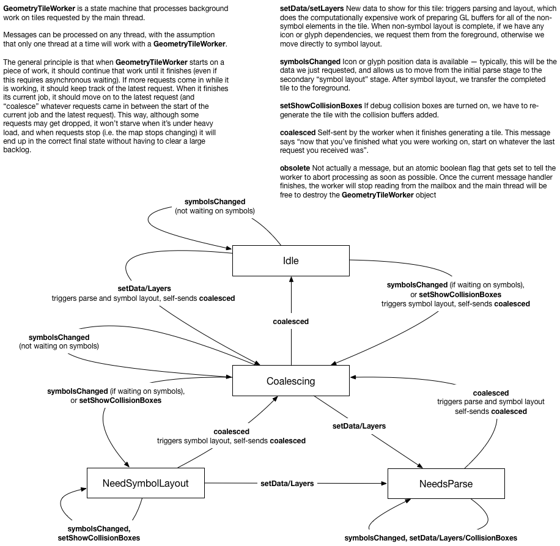
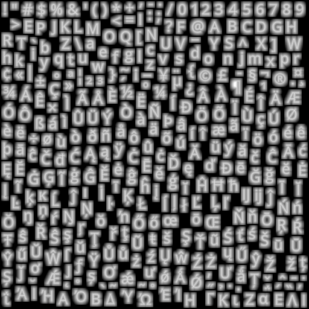
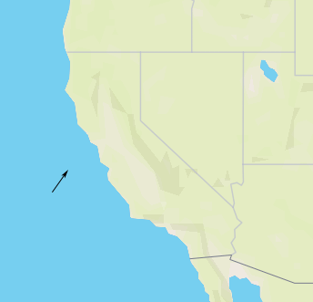
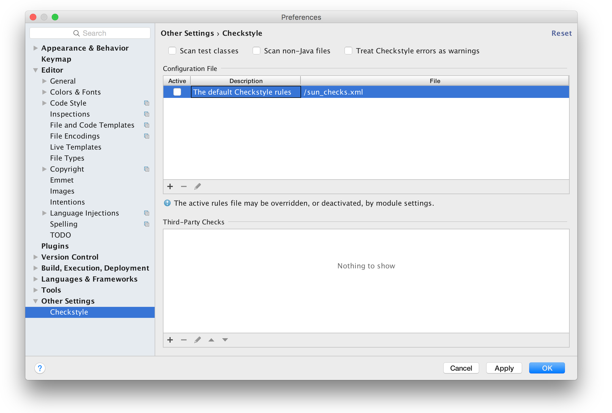
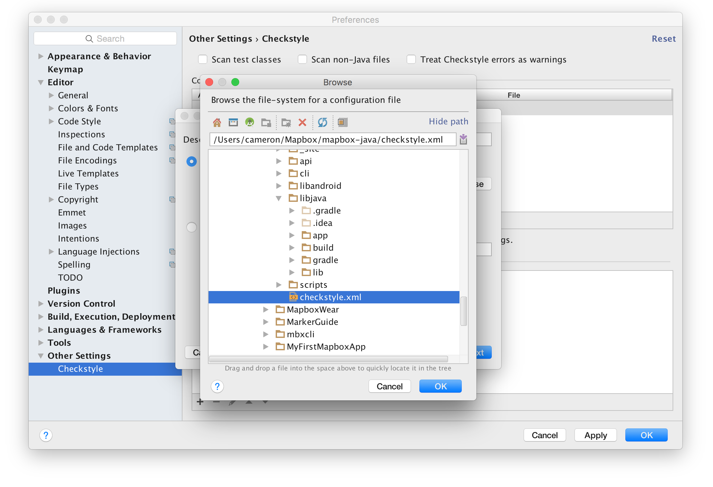
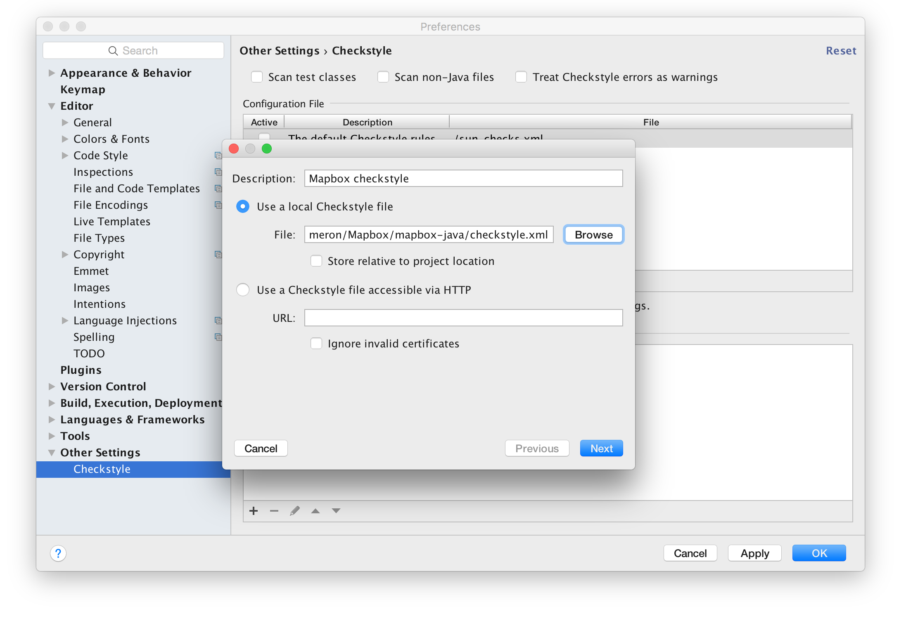
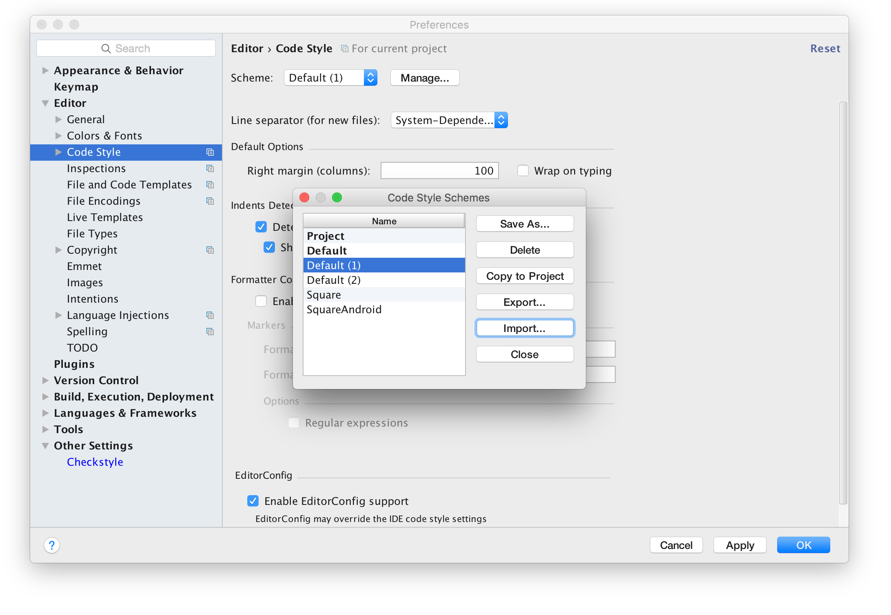
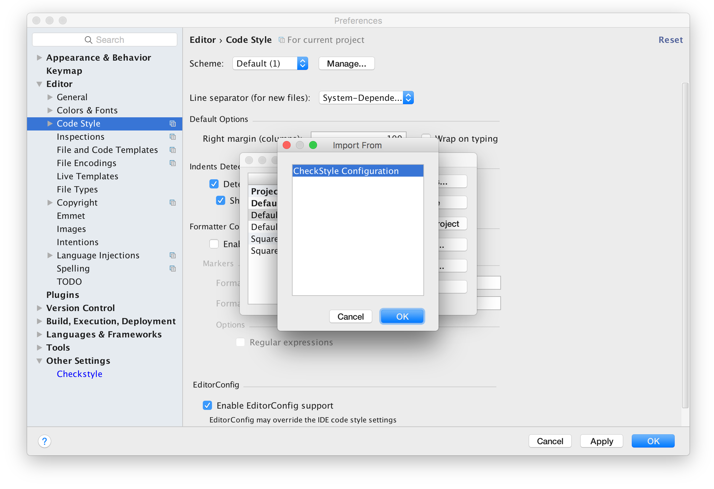
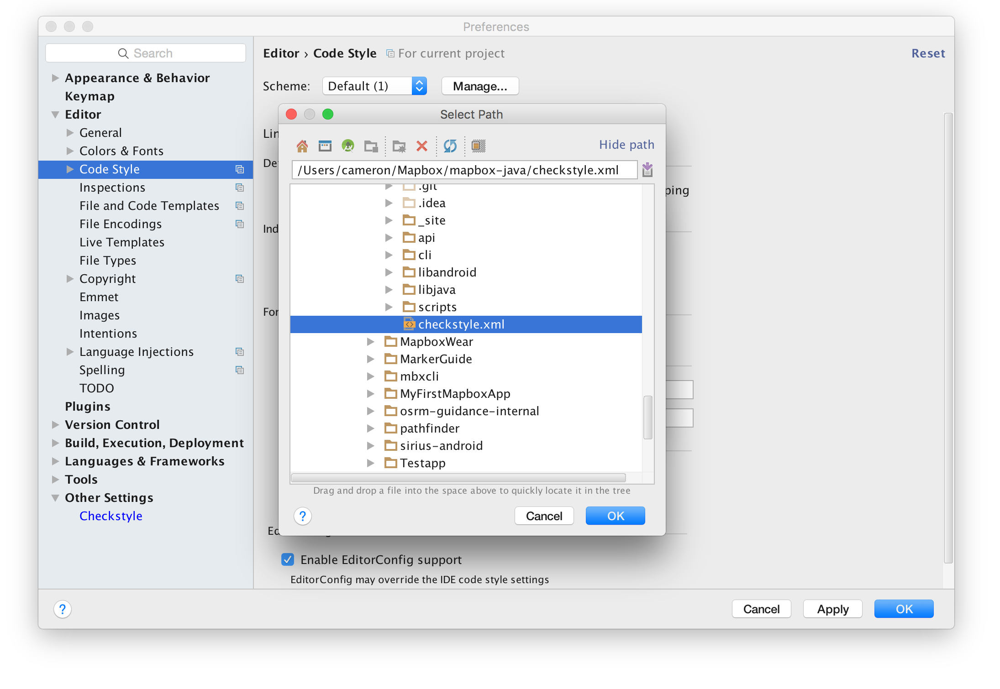

MapLibre Architecture
View it here.
This was forked from the mapbox-gl-native wiki commit 1640f7f (Apr 27, 2020).
maplibre-gl-native was forked from d60fd30 which happened on Apr 30, 2020.
The documentation is also valid for maplibre-gl-native. Most of it is also valid for maplibre-gl-js.
Contributing
Issues are disabled in this repo. If you want to contribute directly create a PR.
License
Up until commit 1640f7f:
console.log([][[]])
Changes after 1640f7f:
MIT
Mapbox GL Collision Detection
This document is meant to capture the overall architecture of symbol collision detection at the end of 2017, after making the change to global (e.g. cross-source) viewport-based collision detection.
Mapbox vector tiles contain a collection of features to draw on a map, along with labels (either text or icons, generically called “symbols”) to attach to those features. Generally, the set of labels in a tile is larger than the set of labels that can be displayed on the screen at one time without overlap. To preserve legibility, we automatically choose subsets of those labels to display on the screen for any given frame: this is what we call “collision detection”. The set of labels that we choose can change dramatically as camera parameters change (pitch/rotation/zoom/etc.) because in general the shape of text itself will not be affected the same way as the underlying geometry the text is attached to.
Collision Detection Desiderata
- Correct: Labels don’t overlap!
- Prioritized: More important labels are chosen before less important labels
- Deterministic: viewing the same map data from the same camera perspective will always generate the same results
- Stable: During camera operations such as panning/zooming/rotating, labels should not disappear unless there’s no longer space for them on the screen
- Global: collision detection should account for all labels on the screen, no matter their source
- Smooth: when collisions happen, we should be able to animate fade transitions to remove “collided” labels
- Fast: collision detection should be integrated into a 60 FPS rendering loop, which means synchronous calculations that take more than a few milliseconds are unacceptable. On the other hand, latency of a couple hundred milliseconds in actually detecting a new collision is perceptually acceptable.
Basic Strategy
The core of our collision detection algorithm uses a two-dimensional spatial data structure we call a GridIndex that is optimized for fast insertion and fast querying of “bounding geometries” for symbols on the map. Every time we run collision detection, we go through the set of all items we’d like to display, in order of their importance:
- We use information about the size/style/position of the label, along with the current camera position, to calculate a bounding geometry for the symbol as it will display on the current screen
- We check if the bounding geometry for the symbol fits in unused space in the
GridIndex. - If there’s room, we insert the geometry, thereby marking the space as “used”. Otherwise, we mark this label “collided” and move on to the next label
The “global”, “smooth”, and “fast” desiderata add an important challenge for Mapbox GL because Mapbox maps are frequently combining data from multiple sources, and any change in any of the sources can potentially affect symbols from all of the other sources (because of “cascade” effects, introducing a symbol B that blocks symbol A could open up room for symbol C to display, which could in turn block a previously-showing symbol D…). To manage this challenge, we use a data structure we call the CrossTileSymbolIndex which allows us to globally synchronize collision detection (and symbol fade animation).
GridIndex
The GridIndex is a two-dimensional spatial data structure. Although the data structure itself is context-agnostic, in practice we use a GridIndex in which the 2D plane is the “viewport” — that is, the plane of the device’s screen. This is in contrast to the “tile” or “map” plane used to represent our underlying data. While most map-drawing logic is easiest to process in “map” coordinates, “viewport” coordinates are a better fit for text because in general we prefer text that is aligned flat relative to the screen.
GridIndex holds two types of geometries:
- Rectangles: used to represent “point” labels (e.g. a city name)
- Circles: used to represent “line” labels (e.g. a street name that follows the curve of the street)
We limit ourselves to these two geometry types because it easy to quickly test for the three possible types of intersection (rectangle-rectangle, circle-circle, and rectangle-circle).
Rectangles Rectangles are a fairly good fit for point labels because:
- Text in point labels is laid out in a straight line
- Point labels are generally oriented to the viewport, which means their orientation won’t change during map rotation (although their position will change)
- Multi-line point labels are, as much as possible, balanced so that the lines approximate a rectangle: https://github.com/mapbox/hey/issues/6079
- Text is generally drawn on the viewport plane (i.e. flat relative to the screen). When it is drawn “pitched” (i.e. flat relative to the map), a viewport-aligned rectangle can still serve as a reasonable approximation, because the pitched projection of the text will be a trapezoid circumscribed by the rectangle.
Circles Line labels are represented as a series of circles that follow the course of the underlying line geometry across the length of the label. The circles are chosen so that (1) both the beginning and end of the label will be covered by circles, (2) along the line, the gap between adjacent circles will never be too large, (3) for performance reasons, adjacent circles won’t significantly overlap. The code that chooses which circles to use for a label is tightly integrated with the line label rendering code, and it’s also code we’re thinking of changing: I’ll consider it out of scope for this document.
Representing a label as several circles is more expensive than representing it as a single rectangle, but still relatively cheap. Using multiple circles allows us to approximate arbitrary line geometries (and in fact there are outstanding feature requests that would require us to support other arbitrary collision geometries such as “don’t let labels get drawn over this lake” — we would probably implement support by converting those geometries into circles first).
The key benefit of circles relative to rectangles is that they are stable under rotation. Since line labels are attached to map geometry, they necessarily rotate with the map, unlike point labels, which are usually fixed to the viewport orientation. If we were using small rectangles to represent line labels (as we did before the most recent changes), then the viewport-aligned rectangles would rotate relative to the map during map rotation. The rotation change alone could cause two adjacent line labels to collide, violating our “stability” desideratum. Circles, on the other hand, are conveniently totally unaffected by rotation.
The Grid
The “grid” part of GridIndex is a technique for making queries faster that relies on the assumption that most geometries that are stored in the index will only occupy a relatively small portion of the plane. When we use the GridIndex to represent a (for example) 600px by 600px viewport, we split the 600x600px plane into a grid of 400 (20x20) 30px-square “cells”.
For each bounding geometry we insert, we check to see which cells the geometry intersects with, and make an entry in that cell representing a pointer to the bounding geometry. So for example a rectangle that spans from [x: 10, y: 10] to [x: 70, y: 20] would be inserted into the first three cells in the grid (which would span from [0,0] to [90, 30]).
When we want to test if a bounding geometry intersects with something already in the GridIndex, we first find the set of cells it intersects with. Then, for each of the cells it intersects with, we look up the set of bounding geometries contained in that cell, and directly test the geometries for intersection.
Given the assumption that bounding geometries are relatively uniformly distributed (which is a reasonable assumption for map labels), this approach has an attractive algorithmic property: doubling the dimensions of the index (and thus roughly doubling the number of entries) is not expected to have a significant impact on the cost of a query against the index. This is because for any given query the cost of finding the right cells is near constant, and the number of comparisons to run against each cell is a function of the density of the index, but not its overall size. Since our collision detection algorithm has to test every label for collision against every other label, near-constant-time queries allow us to keep collision detection time linear in the number of labels.
If the cell size is too small, the “fixed” part of a query (looking up cells) becomes too expensive, while if the cell size is too large, the index degenerates towards a case in which every geometry has to be compared against every other geometry on every query. We derived the 30px-square cell size by experimental profiling of common map animations. Conceptually, this is roughly the smallest size at which individual “collision circles” for 16px-high are likely to fit within a single cell and at most four cells. Optimizing for individual circles makes sense because the most expensive collision detection scenario for us is a dense network of road labels, which will be almost entirely represented with circles.
CrossTileSymbolIndex
We satisfy the “smooth” desideratum by using animations to fade symbols in (when they’re newly allowed to appear) and out (when they collide with another label). However, our tile-based map presents a challenge: symbols that are logically separate (e.g. “San Francisco” at zoom level 10 and “San Francisco” at z11) may be conceptually tied together, and the user expects consistent animation between the them (i.e. “San Francisco” should not fade out and fade back in when the z10 version is replaced by the z11 version, and if “San Francisco” is fading in while the zoom level is changing, the animation shouldn’t be interrupted by the zoom level change).
The CrossTileSymbolIndex solves this problem by providing a global index of all symbols, which identifies “duplicate” symbols across different zoom levels and assigns them a shared unique identifier called a crossTileID.
Opacities Uploading data to the GPU is expensive, so to satisfy the “fast” desideratum, the only data we upload as a result of collision detection is a small “symbol opacity”, which is a “current opacity” between 0 and 1, and a “target opacity” of either 0 or 1. The shader running on the GPU is responsible for interpolating between the current opacity and the target opacity using a clock parameter passed in as an argument.
The output of the collision detection algorithm is used to set the target opacity of every symbol to either 0 or 1. Every time the opacities are updated by collision detection, the “clock parameter” is essentially reset to zero, and the CPU re-calculates the baseline “current opacity”. One way to conceptualize this is “if the current opacity is different from the target opacity, a fade animation is in progress”.
Working with the shared, unique crossTileID makes it easy to handle smooth animations between zoom levels — instead of storing the current/target opacity for each symbol, we store it once per crossTileID. Then, at render time, we assign that opacity state to the “front-most” symbol, and assign the rest of the symbols the “invisible” opacity state [0,0].
Consider the “San Francisco” example, in which the label starts a 300ms fade-in while we are at zoom 10, and then we cross over into zoom 11 while the fade is still in progress.
- “San Francisco” at z10 is given
crossTileID12345. It starts fading in, so is given opacity state [0,1]. - z11 tile loads, “San Francisco” is given ID 12345, but at render time given opacity [0,0]
- After 150 ms collision detection runs and opacities are updated. 12345 opacity is updated to [.5,1]
- z10 tile is unloaded. At this point z11 version of “San Francisco” is the front-most symbol for 12345, so it is rendered with [.5,1], allowing the fade-in animation to continue
- After another 150ms, the fade in animation completes (without requiring any opacity updates)
- After another 150ms, collision detection runs again and 12345’s opacity is updated to the “finished” state of [1,1].
This opacity strategy also gives us a way to start showing the data from newly loaded tiles before we’ve had a chance to re-run the global collision detection algorithm with data from that tile: for symbols that share a cross-tile ID with an already existing symbol, we just pick up the pre-existing opacity state, while we assign all new cross-tile IDs an opacity state of [0,0]. The general effect while zooming in is that a tile will start showing with its most important POIs (the ones shared with the previous zoom level), and then some short period of time after the tile loads, the smaller POIs and road labels will start fading in.
Detecting Duplicates
The CrossTileSymbolIndex is a collection of CrossTileSymbolLayerIndexes: duplicates can only exist within a single layer. Each CrossTileSymbolLayerIndex contains, for each integer zoom level, a map of tile coordinates to a TileLayerIndex. A TileLayerIndex represents all the symbols for a given layer and tile. It has a findMatches method that can identify symbols in its tile/layer that are duplicate with symbols in another tile/layer. The query logic is, for each symbol:
- If the query symbol is text, load the set of symbols that have the exact same text (often just one symbol). If the query symbol is an icon, load the set of all icons.
- Convert the query symbol into “world coordinates” (see https://github.com/mapbox/hey/issues/6350) at the zoom level of the index. If the index is at z11 and the query symbol is at z10, the conversion essentially looks like a doubling of the query coordinates.
- Reduce the precision of the coordinates — this is a type of rounding operation that allows us to detect “very close” coordinates as matches
- For each local symbol, test if the scaled coordinates of the query are within a small “tolerance” limit of each other. If so, mark the query symbol as a duplicate by copying the
crossTileIDinto it.
The index is updated every time a tile is added to the render tree. On adding a tile, the algorithm is:
- Iterate over all children of the tile in the index, starting from the highest resolution zoom, and find any duplicates. Then, iterate over all parents of this tile, still in order of decreasing zoom. For each symbol in this tile, assign the first duplicate
crossTileIDyou find. - For each symbol that didn’t get assigned a duplicate
crossTileIDcreate a new uniquecrossTileID - Remove index entries for any tiles that have been removed from the render tree.
A common operation is to replace a tile at one zoom level with a tile at a higher or lower zoom level. In many cases, the two tiles will both render simultaneously for some period before the old tile is removed, but it is also possible for there to be an instantaneous (i.e. single frame) swap between tiles in the render tree. In this case, an important property of the above algorithm is that the duplicate detection in step (1) happens before the unused tile pruning in step (3).
(this article is mostly a stub)
Mapbox GL's threading structure is built around the concept of message passing. In GL JS, this is enforced by the WebWorker interface, while in gl-native we implement message passing using the Actor interface. In GL JS efficient transfer between threads requires serializing to raw TypedArrays, while in native we can simply transfer ownership of pointers. The relative difficulty of transferring ownership on the JS side leads to some architectural compromises (for instance, on native, any worker thread can pick up work on a tile, whereas on the JS side tiles are coupled to individual workers in order to hold onto intermediate state). Native also takes advantage of the Immutable pattern to allow read-only sharing between threads.
All versions of GL have a pool of "workers" that are primarily responsible for background tile generation, along with a "render" thread that continually renders the current state of the map using whatever tiles are currently available. On JS and iOS, the render thread is the same as the foreground/UI thread. For performance reasons, the Android render thread is separated from the UI thread -- changes to the map made on the UI thread are batched and sent to the render thread for processing. The platforms also introduce worker threads for various platform-specific tasks (for instance, running HTTP requests in the background), but in general the core code is agnostic about where those tasks get performed: it sends a request and runs a callback when it gets a response. The platform implementations of CustomGeometrySource currently run their own worker pools, but I think we should probably get rid of them: https://github.com/mapbox/mapbox-gl-native/issues/11895.
Each platform is required to provide its own implementation of concurrency/threading primitives for gl-core to use. The platform code outside of core is also free to use its own threading model (for instance, the iOS SDK uses Grand Central Dispatch for running asynchronous tasks).
Geometry Tile Worker

Expression Architecture
This document is meant to be an introduction to working with “expressions” in the Mapbox GL codebase. It uses gl-js examples, but the gl-native implementation is usually closely analogous (with a few layers of templating on top). I wasn’t very involved in the original design discussions, so this is mostly a distillation of what I’ve learned in the process of extending the expression language with the “collator” and “format” types. In my experience, the expression language itself is not as hard to understand as its embedding within the rest of the map.
Background
Key Mapbox GL concepts from pre-expression days:
- “Layout” properties in the style spec are properties that are calculated at tile generation time, in the background. e.g. 'text-font': ["DIN Office Pro", "Arial Unicode MS"]
- “Paint” properties are calculated at render time, and can generally be updated much more quickly. Whether something is a paint or layout property often just depends on the implementation difficulty of calculating the property at run time. e.g. 'circle-radius': 20
- There are monster hybrids, like
text-size, which is a “layout” property but is also evaluated at render time. - “Data-Driven Styling (DDS)” This is the ability to generate layout and paint properties separately for each individual feature in a layer, based on (1) zoom and (2) feature properties.
- “Run-Time Styling” The ability to change the style at run-time. Not directly relevant to expressions except that changes require re-evaluating expressions. Changes to paint properties can be made immediately, while changes to layout properties require re-parsing tiles.
- “Function” This is the pre-expression syntax for DDS. “functions” exposed a fixed set of interpolation functions that could map input parameters to output parameters. Functions are still supported, but under the hood we simply convert them into equivalent general purpose “expressions”. Example: 'circle-radius': { property: 'population', stops: [ [{zoom: 8, value: 0}, 0], [{zoom: 8, value: 250}, 1], [{zoom: 11, value: 0}, 0], [{zoom: 11, value: 250}, 6], [{zoom: 16, value: 0}, 0], [{zoom: 16, value: 250}, 40] ] }
- “Layer” Know your “source layer” (this is a layer of data in a vector tile) from your “style layer” (this is a layer in the style sheet, you could also think of this as a “rendered” layer)
- “Filter” A filter expresses rules for filtering features from a source layer to be included or excluded from a style layer. Before expressions, filters used their own mini-language in the style spec JSON. Pre-expression filters are now converted into expressions before being evaluated.
- “Interpolation” We support linear, categorical, exponential, and cubic-bezier interpolation functions, both before and after expressions.
- “Constant" vs. “Zoom-Dependent” vs. “Property-Dependent” vs. “Zoom-and-Property-Dependent” Every property falls into one of these categories, both before and after expressions. Typically different code pathways are used for each category, with the most complex/expensive code pathway for zoom-and-property-dependent paint properties. In expression terms, you will see the equivalent isFeatureConstant or isZoomConstant, and also CameraExpression (zoom) SourceExpression (property), and CompositeExpression (zoom-and-property).
- “Paint Property Binders" These are a complex piece of
magiclogic that support rendering of property-dependent and zoom-and-property-dependent features within minimal render-time calculation. Hand-wavy, not-quite-accurate explanation: For each “bound” property (for example:circle-radius), and for each feature in the layer, there’s an entry recording the value for that feature evaluated attileZoomand also evaluated attileZoom + 1. At render time, an interpolation parameter is calculated based on the current zoom and the interpolation curve, and then passed to the shader.- This approach doesn’t change with expressions, which explains this limitation from the docs: “… in layout or paint properties,
["zoom"]may appear only as the input to an outer[interpolate](https://www.mapbox.com/mapbox-gl-js/style-spec/#expressions-interpolate)or[step](https://www.mapbox.com/mapbox-gl-js/style-spec/#expressions-step)expression, or such an expression within a[let](https://www.mapbox.com/mapbox-gl-js/style-spec/#expressions-let)expression.” - For more detail, see
program_configuration.js, specifically theBinderinterface
- This approach doesn’t change with expressions, which explains this limitation from the docs: “… in layout or paint properties,
- “Tokens” e.g.
{name_en}. The pre-expression way to refer to per-feature data in vector tiles. Before expressions, these could only be used in specialized contexts (like thetext-fieldproperty). After expressions, tokens are automatically converted into “get” expressions, e.g.[``"``get``"``,"``name_en``"``].
Design Goals
- Complete the work of DDS in exposing data in vector tiles as input for styling, without falling back to implementing one specialized “function” after another. The original name for this feature was “arbitrary expressions” — representing the alternative of implementing one expression at a time.
- See https://github.com/mapbox/mapbox-gl-js/issues/4077 for some background
- Allow arbitrary logical and mathematical operations on per-feature data
- Do not allow looping, turing-completeness, etc. The idea is to make a declarative language in which it should be relatively difficult to shoot yourself in the foot. We don’t want style authors to be able to make a layer whose cost to evaluate scales super-linearly with the number of features in the layer.
- Can easily be extended with new “vocabulary” over time
- Can be embedded in existing style spec
- Can port all existing functionality to expressions
- Minimal evaluation overhead
The JSON/”lispy” syntax we went with satisfied the above goals, and had the attraction that the written form of expressions stayed close to the underlying AST. Our users are generally not excited about learning a new DSL to modify styling options — but one way to think of this is that the expression language itself can be a target of other, more appropriate DSLs. For example, on the iOS SDK, we wrap expressions in the platform-appropriate [NSExpression](https://www.mapbox.com/ios-sdk/api/4.6.0/predicates-and-expressions.html) syntax. In Studio, we use Jamsession to make a simplified expression builder.
Implementation
For each filter or property that uses an expression, we parse the raw JSON using a “parsing context” for that property. The result is a parsed expression tree, which is then embedded in a PropertyValue. At evaluation time, we provide an “evaluation context” and then evaluate the expression tree starting from the root. The result will be a constant value matching the property’s type.
Parsing
The root of the parsing logic is in parsing_context.js. You start parsing with a mostly empty context (it contains information such as the expected type of the result, which is used in some automatic coercion logic). The first item in an expression array is the name (or “operator”) of the expression (e.g. "``concat``"). The parser looks up the Expression implementation for that operator, and then hands parsing off to the class. Each implementation has its own logic for parsing children: if it accepts arguments that are themselves expressions, it will recurse into the root parsing logic, but with added context (for instance, expected types, bound "``let``" variables, etc.).
CompoundExpression
Most expressions don’t need any special parsing rules beyond knowing their return type, their argument types, and any argument type overloads. All of these expressions are implemented using CompoundExpression. Example (from definitions/index.js):
'^': [
NumberType,
[NumberType, NumberType],
(ctx, [b, e]) => Math.pow(b.evaluate(ctx), e.evaluate(ctx))
],
This says "``^``" is an expression that returns a number, and it expects as arguments two expressions that return numbers (they could be constant expressions). The evaluator evaluates both child expressions, and then applies Math.pow to the results. ctx is the “evaluation context” getting passed through — a child expression might use it to know the current zoom level, or to look up a feature property, etc.
Types, Assertions, and Coercions The expression language has parse time and run-time type checking, based on this set of types:
export type Type =
NullTypeT |
NumberTypeT |
StringTypeT |
BooleanTypeT |
ColorTypeT |
ObjectTypeT |
ValueTypeT |
ArrayType |
ErrorTypeT |
CollatorTypeT |
FormattedTypeT
An assertion is a type of expression that allows you to give a return type to something that doesn’t have a type. So for instance [``"``get``"``, "``feature_property``"``] returns the generic ValueType, but if you want to pass it to an expression that requires a string argument, you can use an assertion: [``"``string``"``, [``"``get``"``, "``feature_property``"``]]. Assertions throw an evaluation-time error if the types don’t match during evaluation.
A coercion is a type of expression that allows you to convert return types. You can provide fallbacks in case coercion fails. e.g. [``"``to-number``"``, [``"``get``"``, "``feature_property``"``], 0].
The initial implementation of the expression language erred on the side of requiring users to be explicit about types — for instance, "``get``" expressions very frequently had to be wrapped in assertions. In response to user feedbacks, we started building more “implicit” typing into the parsing engine. This is accomplished by automatically adding Assertion and Coercion expressions at parse time (they are called “annotations”). The basic rules are:
// When we expect a number, string, boolean, or array but have a value, wrap it in an assertion.
// When we expect a color or formatted string, but have a string or value, wrap it in a coercion.
Constant Folding
There’s not much compile-time optimization in expressions, but one thing we do at compile time whenever we parse a sub-expression, we check if it’s “constant” (i.e. it doesn’t depend on any evaluation context). If so, we evaluate the expression, and then replace it with a Literal expression containing the result of the evaluation.
Evaluation
Evaluation is really pretty simple — you call “evaluate” on the root expression, it recurses, and eventually gives you back either a result or an error. The somewhat tricky part is the provided EvaluationContext, which hooks the expression language up to actual data on the map. It contains:
GlobalProperties: global map state, like the current zoom levelFeature: if this expression is being evaluated per-feature, this is the actual data for the feature from the underlying vector-tileFeatureState: Global “feature state” index, if necessary for this expression
Property, PropertyValue, and PossiblyEvaluatedValue, oh my…
This is technically outside the expression language, but understanding how style properties are hooked up to expressions is key to understanding how expressions are actually used. properties.js has lots of documentation! To start getting oriented:
Propertyrefers to a property in the style specification. e.g.'``circle-radius``'PropertyValuerefers to the right hand-side of a property in the style sheet. e.g.'``circle-radius``'``: 20. It can be a constant value or an expression.PossiblyEvaluatedValueis all about not re-evaluating when you don’t need to. So if you have a “Property” that’s of type “DataDrivenProperty”, it will have a “PossiblyEvaluatedValue”. But for instance if that value is an expression and it’s “feature-constant”, then we can just store the value here and return it in future calls topossiblyEvaluateinstead of continually re-evaluating the expression.
Adding a New Expression
Adding a new expression is actually pretty easy, as long as you don’t have to modify the type system. If it fits the parsing pattern of CompoundExpression, then you can just add it to the CompoundExpression registry, with a custom evaluation function. If not, well let’s see how to implement a “Foo” expression!
Register the operator in definitions/index.js:
const expressions: ExpressionRegistry = {
...,
'foo', FooExpression
};
Create an implementation file at definitions/foo.js:
export default class FooExpression implements Expression
Implement static parse logic that’s used to create instances of the expression:
static parse(args: Array<mixed>, context: ParsingContext) {
// Here's where you enforce syntax -- if type checking fails, you pass
// the error back up the chain with context.error
if (args.length !== 2)
return context.error(`'foo' expression requires exactly one argument.`);
if (!isValue(args[1]))
return context.error(`invalid value`);
const child = (args[1]: any);
return new FooExpression(child);
}
Implement the evaluate method:
evaluate(ctx: EvaluationContext) {
// We don't use the context, but pass it through to our child
return "bar" + this.child.evaluate(ctx);
}
Implement the eachChild method — this is necessary for various algorithms that traverse the expression tree:
eachChild(fn: (Expression) => void) {
fn(this.child);
}
Implement the possibleOutputs method — this is used to do a simple type of static analysis for expressions that have a finite number of possible outputs (for instance, if the top-level expression is a "``match``" expression with three literal outputs, the only possible outputs are those three, no matter what goes on in the sub-expressions. Some properties are required to have a defined set of possible outputs (for instance text-font), because we need to be able to fetch them ahead of evaluation time. If your expression depends on external state, it could very easily have an infinite number of potential outputs, in which case simply return [undefined].
possibleOutputs() {
// Cop-out!
return [undefined];
}
Finally, implement the serialize method — this is basically the inverse of the parse method. The serialized result may not look identical to the original input that created an expression (because of changes like constant folding), but when evaluated it should give the same result (and in fact our test harness asserts that):
serialize() {
return ["foo", this.child.serialize()];
}
You’re done! Although you should head straight over to test/integration/expression-tests, find an expression that’s similar to yours, copy its tests, and modify them to fit yours. An expression test has an:
- “expression”: of course
- “inputs”: array of Feature/GlobalProperties pairs
- “expected”
- “compiled”: type information
- “outputs”: evaluation results or errors
- “serialized”: result of round-tripping the expression through parse/serialize
GL Text Rendering 101
This document is intended as a high level architectural overview of the path from a text-field entry in a style specification to pixels on a screen. The primary audience is new maintainers or contributors to mapbox-gl-native and mapbox-gl-js, although it may also provide useful context for power users of Mapbox GL who want to know how the sausage is made.
Native and JS share very similar implementations, with occasionally different naming conventions. I will use them mostly interchangeably. For simplicity, I focus on text, but icons are a very close analog — for many purposes, you can think of an icon as just a label with a single “glyph”.
Motivation
Why are we rolling our own text rendering in the first place, when browsers and operating systems already provide powerful text capabilities for free? Basically:
- Control: To make beautiful interactive maps, we’re changing properties of the text in label on every frame
- Size/scale
- Relative positioning of glyphs (e.g. following a curved line)
- Paint properties
- Speed: If we asked the platform to draw the text for us and then uploaded the raster results to textures for rendering on the GPU, we’d have to re-upload a large amount of texture data for every new label, every change in size, etc. By rolling our own text rendering, we can take advantage of the GPU to efficiently re-use/re-combine small constituent parts (glyphs)
Legible, fast, and beautiful is the name of the game.
For some history on how this took shape, check out Ansis' "label placement" blog post from 2014 (many implementation details have changed, but the goals are the same).
Requesting glyphs: text-field + text-font → GlyphDependencies
Imagine a toy symbol:
"layout": {
"text-field": "Hey",
"text-font": [
"Open Sans Semibold",
"Arial Unicode MS Bold"
]
}
The text-font property is specified as a fontstack, which looks like an array of fonts, but from the point of view of GL is just a unique string that’s used for requesting glyph data from the server. Font compositing happens on the server and is totally opaque to GL.
At tile parsing time, the symbol parsing code builds up a glyph dependency map by evaluating text-field and text-font for all symbols in the tile and tracking unique glyphs:
GlyphDependencies: {
"Open Sans Semibold, Arial Unicode MS Bold": ['H', 'e', 'y'],
"Open Sans Regular, Arial Unicode MS": ['t', 'h', 'e', 'r', 'e']
}
It’s worth noting here that our current code treats “glyph” and “unicode codepoint” interchangeably, although that assumption won’t always hold.
Once all the dependencies for a tile have been gathered, we send a getGlyphs message to the foreground, and wait for a response before moving on to symbol layout (unless the worker already has all the dependencies satisfied from an earlier request).
native
SymbolLayout constructor: symbol_layout.cpp
js
SymbolBucket#populate: symbol_bucket.js
GlyphManager
The GlyphManager lives on the foreground and its responsibility is responding to getGlyphs requests with an SDF bitmap and glyph metrics for every requested glyph. The GlyphManager maintains an in-memory cache, and if all the requested glyphs are already cached, it will return them immediately. If not, it will request them.
Server Glyph Requests Every style with text has a line like this:
"glyphs": "mapbox://fonts/mapbox/{fontstack}/{range}.pbf"
This tells the GlyphManager where to request the fonts from (mapbox://fonts/… will resolve to something like https://api.mapbox.com/…). For each missing glyph, the GlyphManager will request a 256-glyph block containing that glyph. The server is responsible for providing the block of glyphs in a Protobuf-encoded format. Requests to api.mapbox.com (and probably most requests to custom-hosted font servers) are ultimately served by node-fontnik.
When the response comes back over the network, the GlyphManager will upload all the glyphs in the block to its local cache (including ones that weren’t explicitly requested). Once all dependencies are satisfied, it will send a response back to the worker.
Local Glyph Generation
The server request system above works pretty well for Latin scripts — usually there’s just one 0-255.pbf request for every fontstack. But it’s a disaster for ideographic/CJK scripts. That’s why we implemented local CJK glyph generation.
When local glyph generation is enabled, it’s the glyph manager who’s responsible for choosing whether to go to the server or generate locally, and the rest of the code doesn’t have to worry about it.
GlyphAtlas
Once the worker receives glyph information from the foreground, it builds a GlyphAtlas out of every glyph that will be used on a tile. The glyph atlas is a single image that will be uploaded as a texture to the GPU along with the rest of the data for the tile. Here’s a visual representation of a glyph atlas:

Once we’ve uploaded the glyph atlas to the GPU, we can represent each glyph we want to draw as two triangles, where the vertices encode both physical locations on the map but also a “lookup” location within the glyph atlas texture.
The raster format of the glyph is not a typical grayscale encoding — instead, it’s a “signed distance field” (SDF), a raster format in which the value of each pixel encodes how far away it is from the “edge” of the glyph. SDFs make it easier for us to do things like dynamically resize text or draw “halos” behind text. For an in-depth description, read Konstantin’s SDF devlog.
Symbol Layout
At the time we parsed the tile, we created one SymbolBucket for each set of symbol layers that shared the same layout properties (typically there is a 1:1 mapping between style layers and symbol buckets — but when two style layers differ only in their paint properties we share their layout work as an optimization). After parsing, the bucket contains a list of “features” that point into the raw vector tile data.
“Layout” is the process of turning those raw features into GL buffers ready for upload to the GPU, along with collision metadata (the FeatureIndex). The process starts by iterating over every feature, evaluating all of the style properties against that feature, and generating anchor points for the resulting symbol. Then we move on to shaping…
native
SymbolLayout::prepareSymbols: symbol_layout.cpp
js
performSymbolLayout: symbol_layout.js
Shaping
Shaping is the process of choosing how to position glyphs relative to each other. This can be a complicated process, but the basics are pretty simple — we start by placing our first glyph at some origin point, then we advance our “x” coordinate by the “advance” of the glyph, and place our second glyph. When we come to a line break, we reset our “x” coordinate and increment our “y” coordinate by the line height.

We do shaping in a coordinate system that’s independent for each symbol — basically the positions are always relative to the symbol anchor. For symbol-placement: point, each glyph gets an “x” and “y” coordinate. For symbol-placement: line, we always lay out in a single line and essentially collapse to just “x” coordinates (at render time, we use the line geometry to calculate the actual position of each glyph).
Line Breaking The shaping code is responsible for determining where to insert line breaks. The algorithm we use tries to find a set of line breaks that will make all lines of a label have relatively similar length. For details on the algorithm (and why this is important for CJK labels), see my blog post on line-breaking.
BiDi and Arabic “Shaping” The shaping code is also responsible for applying the Unicode Bidirectional algorithm to figure out how to interleave left-to-right and right-to-left text (it’s actually intertwined with line breaking). It’s actually not responsible for the thing we call “arabic shaping”, which is actually a codepoint substitution hack implemented in the earlier tile parsing stage. For more details, see my blog post on supprting Arabic text.
Vertical Text Layout We have support for rotating CJK characters when they’re following a line that’s within 45 degrees of vertical. The way the implementation works is to run shaping twice: once in horizontal mode, and once in vertical mode (where CJK characters are rotated, but non-CJK characters aren’t). We upload both shapings to the GPU, and at render-time we dynamically calculate the orientation of each line label (based on current camera position), and based on that toggle which set of glyphs to hide/show.
Variable Text Anchors We’ve just added the ability for symbols to automatically change their anchor position to find a place to “fit” on the map. If changing the anchor may also require the text justification to change, we generate an extra shaping for each possible justification, and choose which set of glyphs at render time.
native
getShaping: shaping.cpp
js
shapeText: shaping.js
Generating Quads
The process of going from a shaping to GL buffers is pretty straightforward. It’s just a matter of taking each rectangular glyph from the shaping and turning it into two triangles (called a “quad”). We apply transforms like text rotation here, but essentially the way to think of it is just a translation between different in memory-representations of the same data.
After the buffers are generated, background work is essentially done, and we transfer all the buffers for our tile to the foreground, so it can start rendering.
native
quads.cpp and SymbolLayout::addSymbol
js
quads.js and SymbolBucket::addSymbol
The Foreground
All of the work up to this point happened in the background — if it takes longer to run, it means tiles take longer to load. Background work has to be fast relative to the cost of loading a tile from the network (or disk). If a tile can parse in 50ms, that’s fine. On the foreground, anything that takes more than a few millisecond will cause ugly, janky rendering.
Every 16ms, the render thread is responsible for drawing a frame with the contents of the currently loaded tiles. For symbols, this involves a few components:
- Collision detection (running every 300ms)
- Per-layer CPU work (mainly updating line label positions)
- Per-layer GPU draw calls (running the shaders)
We originally did collision detection and line label layout on the background (along with the GPU), but despite the strict limits on render-thread CPU time, we moved them to the foreground over the course of 2017. Why?
- Each symbol instance comes from a specific tile, but symbols render across tile boundaries and can collide with each other across tile boundaries. Doing collision detection properly required global collision detection, and the foreground is the one place that has all the data available.
- Text is way more legible laid out on the plane of the viewport, but background layout is necessarily done on the plane of the map, and the GPU has limited capability to re-do layout, since it has to handle each vertex in isolation from all the other vertices that make up a label.
The cumulative effect of the "pitched label quest" of 2017 was a dramatic improvement in the legibility of our maps in pitched views:
| Before: gl-js v0.37, streets-v9 | After: gl-js v0.42, streets-v10 |
|---|---|
 |  |
Basics of Collision Detection (aka “Placement”)
To understand how our collision detection works, dig into the Collision Detection article.
The basic idea is that we represent each symbol as a box (for point labels) or as a series of circles (for line labels). When we run collision detection, we start with our highest priority feature, add its geometry to a 2D spatial index, and then move on to the next feature. As we go through each feature, we only add features that don’t collide with any already-placed features.
Fading After collision detection finishes, we start fading in newly placed items and fading out newly collided items. We do this by uploading “opacity buffers” to the GPU for every symbol layer. For every symbol, we encode the current opacity and the “target” opacity (either 1 or 0). The shader then animates the fading by interpolating between “current” and “target” based on the global clock.
CrossTileSymbolIndex
We use a data structure called the CrossTileSymbolIndex to identify symbols that are “the same” between different tiles (“same” ~ “similar position and same text value”). This is important for smooth zooming without symbols flickering in and out — instead of having to re-run collision detection whenever we load a new tile in order to figure out what we can show, we just match the symbols in the new tile against previously shown symbols, and if we find a match we use the same opacity information for the new symbol (until the next collision detection runs).
Pauseable Placement JS has a feature that splits collision detection across multiple frames, with a ~2ms limit for each frame. This adds complexity to the code, and on the native side we got acceptable performance without this feature, so we never implemented it.
Symbol Querying
We have a long tradition of implementing new features and only when we think we’re finished realizing that we broke the queryRenderedFeatures functionality. Symbol querying is built on top of the CollisionIndex — we translate queries into the coordinates used by the collision index, get a list of symbols that intersect with the query coordinates, and then look up the data for the underlying features in the underlying (per-tile) FeatureIndex.
native
placement.cpp and cross_tile_symbol_index.cpp
js
placement.js and cross_tile_symbol_index.js
Render-time layout for line labels
Labels on curved lines in a pitched view are tricky. We want the glyphs to have consistent spacing in the viewport plane, but we want the glyphs to follow lines that are laid out in the tile plane, and the relationship between tile coordinates and viewport coordinates changes on every frame.
We brute-force the problem. For every line label, we transfer not only its glyphs to the foreground, but also the geometry of the line that it’s laid out on. At render time, we start at the anchor point for the label, and figure out where the ends of that line segment end up in viewport space. If there’s enough space for the label, we lay it out along that projected line. Otherwise, we keep moving outward, one line segment at a time, until there’s enough room for the whole label, and for each glyph we calculate x/y coordinates based on where it fits on the projected lines. Then, we upload all of this layout data to the GPU before drawing.
This is expensive! On dense city maps, it shows up as our biggest render-thread expense. But it also looks good.

We also use this render-time line projection logic to determine which “collision circles” should be used for a label (as you pitch the map, vertically oriented labels essentially get “longer”, so they need to use more collision circles). It’s a historical accident that we create these collision circles on the background and then dynamically choose which ones to use on the foreground — if we were starting fresh, we would just generate the collision circles on the foreground.
native
See reprojectLineLabels in render_symbol_layer.cpp
js
See symbolProjection.updateLineLabels in draw_symbol.js
Perspective Scaling
What’s up with this formula: 0.5 + 0.5 * camera_to_center / camera_to_anchor?
It’s a technique for making far-away text somewhat easier to read, and to keep nearby text from taking up too much space. After a lot of prototyping and over-design, Nicki and I decided on a simple rule: “all text in pitched maps should scale at 50% of the rate of the features around it”. So if your label is over a lake in the distance that is drawn at 25% of the size it would be in the center of the map, your text should be drawn at 50% of the size it would be in the center of the map.
In the formula, “camera to center” is the distance (don’t worry about the units, although they’re kind of pixel-based) to the point in the center of the viewport. This is a function of the viewport height and the field of view. “camera to anchor” is the distance to the anchor point of a symbol, in the same units. In an un-pitched map, “camera to anchor” is the same as “camera to center” for every point (if you think about this, it’s not actually the same as if you were staring down at a paper map flat on the table!).
| Before: Dense, hard-to-read labels in the distance | After: Fewer but larger labels in the distance |
|---|---|
 |  |
Units, planes, and projections
Understanding or modifying text code requires a firm grasp of the units involved, and it’s easy to lose track of which you’re working with:
- point The internal unit of glyph metrics and shaping
- Converted to pixels in shader by
fontScale
- Converted to pixels in shader by
- em For us, an “em” is always 24 points.
- When we generate SDFs, we always draw them with a 24 point font. We then scale the glyph based on the
text-size(so a 16 point glyph for us is just 2/3 the size of the 24 point glyph, whereas the underlying font might actually use different glyphs at smaller sizes) - Commonly used for text-related style spec properties
- https://en.wikipedia.org/wiki/Em_(typography)
- When we generate SDFs, we always draw them with a 24 point font. We then scale the glyph based on the
- pixel Self explanatory, right?
- Except these are kind of “imaginary” pixels. Watch out for properties that are specified in pixels but are laid out in tile-space. In that case we may transform them to something that’s not literally a pixel on screen
- See
pixelsToGLUnitsandpixelsToTileUnits
- tile unit value between 0 and tile EXTENT (normalized to 8192 regardless of extent of source tile)
- This is the basic unit for almost everything that gets put in a GL buffer. The transform form a tile converts tile units into positions on screen.
- Assuming 512 pixel tile size and 8192 EXTENT, each tile unit is 1/16 pixel when the tile is shown at its base zoom and unpitched. See
pixelsToTileUnitsfor conversion logic at fractional zoom, and of course in pitched maps there’s no direct linear conversion.
- gl coordinates/NDC [-1, 1] coordinates based on the viewport
- NDC or “normalized” form is just gl-coord x,y,z divided by the “w” component.
u_extrude_scaleis typically used in the shaders to convert into gl units
When you modify a point, you always want to use units that match the coordinate space that you’re currently working in. “Projection” transform points from one coordinate space to the next.
- Tile coordinate space
- Use tile units
- Different tiles have different coordinates, but they’re all in the “plane” of the map (that is, the potentially-pitched “surface”)
- Map pixel coordinate space
- Use pixel units
- Transformed from tile units to pixels, but still aligned to the map plane. May be rotated
- Viewport pixel coordinate space
- Use pixel units
- Aligned to viewport (e.g. “flat” relative to viewer)
- GL coordinate space
- Use gl units
- Aligned to viewport
In the text rendering code, the labelPlaneMatrix takes you from tile units to the “label plane” (the plane on which your text is drawn), and then the glCoordMatrix takes you from the label plane to the final gl_Position output. The order of projection depends on what you’re drawing — the two most common cases are:
- Viewport-aligned line labels: use
labelPlaneMatrixto project to viewport-pixel coordinate space in CPU, do layout, pass “identity”labelPlaneMatrixto shader, then applyglCoordMatrixin shader. - Viewport-aligned point labels: pass tile→viewport-pixel
labelPlaneMatrixto shader, which applies projection, does pixel-based layout, then projects to GL coords.
For more details on the coordinate systems, see the comments at the header of: projection.js
For a more detailed walk-through of how we transform points, see Mapbox GL coordinate systems. Or, just to develop an intuition, play with this interactive demo.
How to love the symbol_sdf shader
Phew, we’re finally at the point where something gets drawn on the screen!
Vertex Shader The vertex shader is responsible for figuring out where the outer edges of each glyph quad go on the screen. Its input is basically: an anchor, an offset, and a bunch of sizing/projection information.
There are a few steps:
- Figuring out the “size”
- works differently depending on whether the property is zoom or feature-dependent
- Figuring out the “perspective ratio”
- Based on projecting
a_pos, which is the anchor for the symbol as a whole. Easy to confuse witha_projected_pos, which in the case of line labels can be the CPU-projected position of a single glyph (while in the case of point labels it’s the same asa_pos).
- Based on projecting
- Offsetting the vertex from the label-plane
projected_pos, including rotation as necessary - Calculating opacity to pass to fragment shader
- Projecting to gl coordinates, passing texture coordinates to fragment shader
Fragment Shader The fragment shader is given a position within the glyph atlas texture, looks it up, and then converts it into a pixel value:
alpha = smoothstep(buff - gamma_scaled, buff + gamma_scaled, dist);
👆 dist is the “signed distance” we pull out of the texture. buff is basically the boundary between “inside the glyph” and “outside the glyph” (dirty secret: we call them “signed distance field”, but we actually encode them as uint8s and treat 192-255 as “negative”). gamma_scaled defines the distance range we use to go from alpha 255 to alpha 0 (so we get smooth diagonal edges).
The fragment shader also applies paint properties in a fairly obvious way.
Icons
The astute will note that symbol_icon has a nearly-identical vertex shader, while its fragment shader does lookup in an RGBA texture instead of an SDF. The wise will also know that GL supports uploading SDF icons, so sometimes icons are actually rendered with symbol_sdf.
Tada! 🎉

Aww… crap. When something doesn’t work in the shader, you’re lucky if the result is this 👆 legible. You can’t debug directly in the shader, so how can you tell what’s going wrong?
- Check your units!
- Pause right before the call to
gl_drawElements, examine all the inputs, and try simulating the shader code by hand with pen and paper for one or two vertices. This is fun and doing it regularly will probably reduce your risk of getting dementia when you’re older. - Use an OpenGL debugger (such as WebGL Inspector extension in Chrome) to capture all the draw calls going into a frame. This is good for eyeballing things like “what’s in the texture I just uploaded”. You can also use it to look at the contents of the buffers being used in the draw call, although in my experience it’s easier to inspect them on the CPU side.
- Write debugging code in the shader — the tricky thing is getting creative with figuring out how to extract debug information by drawing it onscreen. The “overdraw inspector” is a simple but very useful example of this approach.
Mapbox GL Coordinate Systems
TL;DR: Unsure how a point on a map gets transformed from a WGS84 latitude/longitude into x and y coordinates of a pixel on your screen?
Love matrix mathWilling to skim past a bunch of math? Read on…Just want to see some of the guts of Mapbox GL without any context? Check out the coordinate transformation demo I made
For the last two months, I've been working on making labels easier to read on pitched maps, and as my first time really working with 3D graphics, it's been a crash course in trigonometry and linear algebra. The work brought back a surprising number of pleasant memories from high school trig class, and made me grateful for all the teachers (from Mr. Hatter twenty years ago to our local math teacher @anandthakker today) who have worked to prepare me for this job!
3D graphics are all about transforming points between different coordinate systems, and as I followed our code to figure out how our transformations worked, I kept getting tripped up because I didn't realize which coordinate system the code was using. In this devlog, I'm trying to answer the question I didn't know I needed to ask when I started: what coordinate systems do we use in Mapbox GL to turn a bunch of points defined by latitude and longitude into a bunch of points with pixel x and y coordinates on your screen?
If you’re working directly on Mapbox GL code, this is important stuff to know: otherwise, these implementation details are for the most part mercifully hidden.
I'll start where @lyzidiamond's awesome devlog on projections and coordinate systems left off: WGS84 latitude and longitude.
Where's the Washington Monument?
Let's follow how one point gets transformed through our different coordinate systems. The Washington Monument is located at approximately (longitude: -77.035915, latitude: 38.889814) in the WGS84 coordinate system. What happens if we ask Mapbox GL to draw a cat at just that point?
There are five coordinate systems we'll move through:
- WGS84
- World Coordinates
- Tile Coordinates
- GL Coordinates
- Screen Coordinates/NDC
Projecting WGS84 to Web Mercator/"World Coordinates" As @lyzidiamond pointed out, computers love squares, so our first step is to take those spherical coordinates and turn them into coordinates on a rectangular 2D world (aka a "Pseudo-Mercator Projection"). Our particular projection imagines the world as a giant grid of pixels with the size:
worldSize = tileSize * number of tiles across one dimension
We use a tile size of 512 (roughly: this means a tile is 512 pixels square, although that would only be true at the base zoom level and without any pitch). I'll assume we're rendering tiles at zoom level 11 (which means there are 2^11 tile positions across both dimensions). That gives us:
worldSize = 512 * 2^11 = 1048576
Then getting an x coordinate is easy, we just shift by 180˚ (because we start with x=0 at -180˚) and multiply by the world size:
x coord = (180˚ + longitude) / 360˚ * worldSize
= (180˚ + -77.035915˚) / 360˚ * 1048576
= 299,904
For the y coordinate, we apply the funky y stretch that is Web Mercator:
y = ln(tan(45˚ + latitude / 2))
= ln(tan(45˚ + 38.889814˚ / 2))
= 0.73781742861
y coord = (180˚ - y * (180 / π)) / 360˚ * worldSize
= (180˚ - 42.27382˚) / 360˚ * 1048576
= 401,156
OK, so (x: 299904, y: 401156) may be a great internal representation, but it's awkward and you have to know what zoom level it applies to. We can represent the same world coordinate by storing the zoom level and dividing the x and y components by the tile size. Our Washington Monument coordinate then becomes: (585.7471, 783.5067, z11). One nice thing about storing coordinates this way is that it's really simple to transform them to different zoom levels.

Web Mercator -> Tile Coordinates
Now we're making progress, because we have almost exactly what we need to ask the server for a tile that contains this point: we just drop the sub-integer precision and ask for (585/783/11).
If we're drawing a vector tile, it will have geometry data for all the things on the map that we need to draw around our Washington Monument Cat. The Mapbox vector tile spec specifies that tiles should have a defined extent that they use internally for coordinates. For a tile with an extent of 1024, (0,0) would be the top left corner of the tile and (1024,1024) would be on the bottom right.
Whatever tile coordinates come in, Mapbox GL internally normalizes to an extent of 8192 — since our tiles are (kind of) 512 pixels wide, that means our tile coordinates have a precision of 512/8192 = 1/16th of a pixel. To represent our Washington Monument coordinates in tile coordinates, we just multiply the remainder by the extent, so:
(x: 585.7471, y: 783.5067, zoom: 11)
Becomes:
Tile: 585/783/11
Tile Coordinates: (.7471 * 8192, .5067 * 8192) = (x: 6120, y: 4151)

Tile Coordinates -> 4D GL Coordinates When Mapbox GL loads a map tile, it pulls together all the data for the tile and turns it into a representation the GPU can understand. In general, the representation we give to the GPU is specified in tile coordinates — the advantage here is that we only have to build the tile once, but then we can ask the GPU to quickly draw the same tile with different bearing, pitch, zoom, and pan parameters.
The code we have that runs on the GPU is called a "shader": it takes tile coordinate inputs and outputs four dimensional "GL Coordinates" in the form (x, y, z, w). Wait, four dimensions? Don't worry, it's just for doing math.
x and y are pretty straightforward left/right and up/down. z is only slightly trickier: it represents position along an axis directly orthogonal to your screen. w is the more mysterious component, but it's necessary for generating the "perspective" effect: you can think of it as a "scaling" parameter for the other components, or as a measure of how far away they are from the viewer. When we draw labels, it's very useful to know the w component of a point, because it gives us a measure of how large the items around us will be (a higher w value means the perspective projection will make everything around our point smaller when it ultimately displays on the screen).
Converting from tile coordinates to GL coordinates involves applying a lot of "transformations" to the coordinates: one to apply perspective, one to move the imaginary camera away from the map, one to center the map, one to rotate the map, one to pitch the map, etc. Each one of these transformations can be represented as a 4D matrix, and all of the matrices can be combined into one matrix that applies all the transformations in one mathematical operation. These transformations build on top of some pixel-based parameters (size of the viewport, idealized size of tile) so we sometimes talk about the resulting coordinates as "pixel" coordinates although it's a fairly indirect connection. You might also see this coordinate system referred to as "clip space".
Let's see what that looks like for a very specific view of our map. Note that each tile has its own projection matrix: before going into GL coordinates, we first have to go back from tile coordinates to world coordinates so that the points from different tiles all have the same frame of reference.
Zoom level: 11.6
Map Center: 38.891/-77.0822 (over Washington DC)
Bearing: -23.2 degrees
Pitch: 45 degrees
Viewport dimensions: 862 by 742 pixels
Tile: 585/783/11 (covering a portion of Washington DC)
Gives a transformation matrix of:
| x | y | z | w | |
|---|---|---|---|---|
| x | 0.224 | -0.079 | -0.026 | -0.026 |
| y | -0.096 | -0.184 | -0.062 | -0.061 |
| z | 0.000 | 0.108 | -0.036 | -0.036 |
| w | -503.244 | 1071.633 | 1469.955 | 1470.211 |
There's way too much to unpack there in one devlog, but if you want to look at all the individual transformations to get a feel for how they fit together to make a 3D projection, and how they change as you move around the map, check out this GL coordinate transformation demo I made.
To get from tile coordinates to GL coordinates, we just turn the tile coordinates into a 4D vector with a z-value of 0 (ignoring buildings for now, sorry @lbud!) and "neutral" w-value of 1. We then apply the transformation matrix to get our GL coordinate, so:
(x: 6120, y: 4151, z: 0, w: 1)
Becomes:
| x | y | z | w | |
|---|---|---|---|---|
| input x = 6120 | 0.224 * 6120 = 1370.88 | -0.079 * 6120 = -483.48 | -0.026 * 6120 = -159.12 | -0.026 * 6120 = -159.12 |
| input y = 4151 | -0.096 * 4151 = -398.496 | -0.184 * 4151 = -763.784 | -0.062 * 4151 = -257.362 | -0.061 * 4151 = 253.311 |
| input z = 0 | 0.000 * 0 = 0 | 0.108 * 0 = 0 | -0.036 * 0 = 0 | -0.036 * 0 = 0 |
| input w = 1 | -503.244 * 1 = -503.244 | 1071.633 * 1 = 1071.633 | 1469.955 * 1 = 1469.955 | 1470.211 * 1 = 1470.211 |
| Output (Summed) | 469.14 | -175.631 | 1053.473 | 1057.78 |
😬 (yikes, the numbers don’t exactly match up with the machine output below! My excuse is that I did the math by hand at low precision…)
(x: 472.1721, y: -177.8471, z: 1052.9670, w: 1053.7176)

When you pan/rotate/tilt our map and it animates at a smooth 60 fps, what's happening is that we're changing the transformation matrix and then passing that modified matrix to the GPU, which does a massively parallel (and mind-bogglingly fast) application of that transformation matrix to all the points it needs to draw.
4D GL Coordinates -> 2D Pixels on your screen Our shader code is done once it outputs GL Coordinates, but OpenGL still does some more work to turn the coordinates into pixel locations on your screen.
First, it transforms to "Normalized Device Coordinates" by dividing the x, y, z components of the GL Coordinate by the w component. The resulting values look like:
x: -1,1 --> left to right of viewport
y: -1,1 --> bottom to top of viewport
z: -1,1 --> depth (not directly visible)
Any values outside of the range [-1,1] indicate points that are off the screen — they are (kind of) thrown away. You can see that another way to think of w is as "the bounds of what coordinates are visible at this distance".
In our example, the GL Coordinates:
(x: 472.1721, y: -177.8471, z: 1052.9670, w: 1053.7176)
Become NDC:
(472.1721 / 1053.72, -177.8471 / 1053.72, 1052.9670 / 1053.72)
-> (x: 0.4481, y: -0.1688, z: 0.9993)
The z-value of NDC doesn't affect the 2D pixel coordinates. Instead, it's used for combining multiple layers (for instance, a bridge drawn over a river). The z-value tells the GPU which points are "in front" of other points: for opaque layers only the frontmost layer will show, but for translucent layers the z-order can be used for blending. Actually, I don't really know what I'm talking about here: ask @lbud!
Finally, OpenGL translates NDC to pixel coordinates based on the size of the viewport:

In our case, the viewport is 862x742 pixels, so:
Pixel Coordinates: (NDC.x * width + width / 2, height / 2 - NDC.y * height)
= (0.4481 * 862 + 431, 371 - (-0.1688 * 742))
= (x: 624, y: 434)
🎉

- Mali Performance series
- Mali GPU Application Optimization Guide
- ARM/Mali Performance and Optimization Tutorials
- Adreno OpenGL ES Developer Guide
- Mozilla list of Mobile GPU optimization (older)
- Optimizations for Tile based deferred GPUs
- PowerVR Performance Recommendations
- PowerVR Presentations
- PowerVR Documentation
- Older PowerVR blog entries
- http://blog.imgtec.com/powervr/a-look-at-the-powervr-graphics-architecture-tile-based-rendering
- http://blog.imgtec.com/powervr/optimizing-graphics-applications-for-powervr-gpus
- http://blog.imgtec.com/powervr/graphics-cores-trying-compare-apples-apples
- http://blog.imgtec.com/powervr/understanding-opengl-es-multi-thread-multi-window-rendering
- http://blog.imgtec.com/powervr/powervr-gpu-opengl-es-graphics-mobile-for-ten-years-p1
- http://blog.imgtec.com/powervr/powervr-gpu-opengl-es-graphics-mobile-for-ten-years-p2
- http://blog.imgtec.com/powervr/how-to-improve-your-renderer-on-powervr-based-platforms
- http://blog.imgtec.com/powervr/micro-benchmark-your-render-on-powervr-series5-series5xt-and-series6-gpus
- http://blog.imgtec.com/powervr/powervr-graphics-we-render-funny
1. Get the plugin for Android Studio
Adding this plugin provides real-time feedback against a given CheckStyle profile by way of an inspection. to add, grab the Checkstyle-idea plugin, install and restart Studio.
You can install the plugin from within Android Studio by opening the Preferences, selecting Plugins in the sidebar, and clicking on Browse repositories…. Search for CheckStyle-IDEA, install and restart Android Studio.
2. Add the projects checkstyle
Open Preferences in Android Studio and navigate to Other Settings. Add the checkstyle by pressing the plus button: 
and grabbing the checkstyle.xml file found in the cloned repo:

Give a description click next and then finish:

Make sure to check the new style to actually apply it in Android Studio. Last thing I do (but is an optional) is to check the Treat Checkstyle errors as warnings.
3. Change the project code style
To make the formatting quick and easy, you'll most likely want to change the code style set in Android studio. Open Preferences.. in Android Studio if it isn't open already and select Editor -> Code Style at the top under Scheme click the manage button:

Chose either project (to change the project style only) default, or make a new on. Click import and add the checkstyle.xml file:


Ensure that the style you imported the checkstyle to is selected in the dropdown menu now and click apply. Now when you are in a java file, all you have to do is press [command][option][l] (on Mac) and the file indentions and other formatting mistakes.
This document describes the required changes needed to update your codebase using v5 of the SDK to the 6.0.0 version.
Java 8:
The 6.0.0 version of the Mapbox Maps SDK for Android introduces the use of Java 8. To fix any Java versioning issues, ensure that you are using Gradle version of 3.0 or greater. Once you’ve done that, add the following compileOptions to the android section of your app-level build.gradle file like so:
android {
...
compileOptions {
sourceCompatibility JavaVersion.VERSION_1_8
targetCompatibility JavaVersion.VERSION_1_8
}
}
This can also be done via your project settings (File > Project Structure > Your_Module > Source Compatibility / Target Compatibility). This is no longer required with Android Studio 3.1.0, as the new dex compiler D8 will be enabled by default.
Adding the compileOptions section above also solves the following error when updating the Maps SDK version:
Static interface methods are only supported starting with Android N (--min-api 24): com.mapbox.geojson.Geometry com.mapbox.geojson.Geometry.fromJson(java.lang.String)
Message{kind=ERROR, text=Static interface methods are only supported starting with Android N (--min-api 24): com.mapbox.geojson.Geometry com.mapbox.geojson.Geometry.fromJson(java.lang.String), sources=[Unknown source file], tool name=Optional.of(D8)}
The static interface method used in com.mapbox.geojson.Geometry is compatible with any minSdkVersion (see Supported Java 8 Language Features and APIs).
Using expressions vs functions / filters
You don't need to worry about using expressions in your project if:
- you don't style any part of your map at runtime
- your project only uses professionally-designed Mapbox map styles (Streets, Outdoors, Satellite Streets, etc.)
- your project only uses a style that you've designed via Mapbox Studio
We've removed the old way of using Stop functions for runtime styling in the 6.0.0 release of the Maps SDK, so you must use expressions going forward.
If you don't want to re-write your code with runtime styling expressions, you don't have to stop using Mapbox and stop building your project. Just use a version of the Mapbox Maps SDK for Android that is below 6.0.0 and you'll be completely fine until you decide to use 6.0.0 or higher!
The 6.0.0 release changes the syntax used to perform apply data-driven styling of the map. Functions and filters have been replaced by expressions. Any layout property, paint property, or filter can now be specified as an expression. An expression defines a formula for computing the value of the property using the operators described below. The set of expression operators provided by Mapbox GL includes:
- Mathematical operators for performing arithmetic and other operations on numeric values
- Logical operators for manipulating boolean values and making conditional decisions
- String operators for manipulating strings
- Data operators, providing access to the properties of source features
- Camera operators, providing access to the parameters defining the current map view
Expressions tips & tricks:
- Stops should be listed in ascending order
- If you’ve got a list of stops where the
Objectvalue for each stop is a number, the stops must be in the order of their values from lowest to highest. In the example below, the two stops that affect the radius of theCircleLayer's circles, are placed in the correct order because 2 is less than 180:
- If you’ve got a list of stops where the
circleRadius(
interpolate(
exponential(1.75f),
zoom(),
stop(12, 2),
stop(22, 180)
)),
- Wrap Android
intcolors with the color expression- The Mapbox style specification exposes the
rgb()andrgba()color expressions. To convert an Androidintcolor to a color expression, you need to wrap it withcolor(int color). For example:
- The Mapbox style specification exposes the
stop(0, color(Color.parseColor("#F2F12D"))).
- When you don’t type your
get()expressions explicitly, it is likely that the expression will implicitly expect them to be a certain type — and fail at runtime. They fall back to the style-spec default if they aren’t the expected type. To alter this behavior, usetoString(),toNumber(),toColor(), ortoBoolean()to explicitly coerce them to the desired type.
Plugin support:
- Deprecation of setXListener
- With the 6.0.0 release we are allowing listeners to be set through
addXListenerto support notifying multiple listeners for plugin support. Passing anullin the add method will listener not result in clearing any listeners. Please use equivalentremoveXListener method instead.
- With the 6.0.0 release we are allowing listeners to be set through
Location layer vs LocationView/trackingsettings:
With the 6.0.0 release, we are removing the deprecated LocationView and related tracking modes from the Maps SDK. These were deprecated in favor of the Location Layer Plugin in the plugins repository. The plugin directly renders the user’s location in GL instead of relying on a synchronized Android SDK View. The 0.5.0 version of the Location Layer Plugin is compatible with the 6.0.0 release of the Maps SDK.
LatLngBounds:
- The latitude values should be within a range of -90 to 90 when a
LatLngBoundsobject is created. - LatLngBounds.Builder will create bounds with the shortest possible span.
// The following bounds will be crossing the antimeridian (new date line)
LatLngBounds latLngBounds = new LatLngBounds.Builder()
.include(new LatLng(10, -170))
.include(new LatLng(-10, 170))
.build();
// latlngBounds.getSpan() will be 20, 20
// The same could be done with
latLngBounds = LatLngBounds.from(10, -170, -10, 170);
Note that if you need bounds created out of the same points but spanning around different part of the earth (forming a much wider bounds) you can use:
LatLngBounds latLngBounds = LatLngBounds.from(10, 170, -10, -170);
// latlngBounds.getSpan() will be 20, 340
- The order of parameters for
LatLngBounds.union()has changed. The parameter order for theunion()method has been made consistent with other methods. That is: North, East, South, West.
GeoJSON changes:
- GeoJSON objects are immutable
- All
setCoordinates()methods are deprecated - Geometry instantiation methods.
The fromCoordinates() method on classes which implement Geometry, were renamed to fromLngLat(). The method name for the Point class is fromLngLat().
The Point, MultiPoint, LineString, MultiLineString, Polygon, and MultiPolygon classes can no longer can be instantiated from an array of double. A List<Point> should be used instead.
Pre-6.0.0 way:
// release 5.x.x:
Polygon domTower = Polygon.fromLngLats(new double[][][] {
new double[][] {
new double[] {
5.12112557888031,
52.09071040847704
},
new double[] {
5.121227502822875,
52.09053901776669
},
new double[] {
5.121484994888306,
52.090601641371805
},
new double[] {
5.1213884353637695,
52.090766439912635
},
new double[] {
5.12112557888031,
52.09071040847704
}
}
});
6.0.0+ way:
// release 6.0.0
List<List<Point>> lngLats = Arrays.asList(
Arrays.asList(
Point.fromLngLat(5.12112557888031, 52.09071040847704),
Point.fromLngLat(5.121227502822875, 52.09053901776669),
Point.fromLngLat(5.121484994888306, 52.090601641371805),
Point.fromLngLat(5.1213884353637695, 52.090766439912635),
Point.fromLngLat(5.12112557888031, 52.09071040847704)
)
);
Polygon domTower = Polygon.fromLngLats(lngLats);
- Changes to getter methods’ names:
Feature and FeatureCollection getter methods don’t start with the word get any more. For example:
-
Feature.getId()→Feature.id() -
Feature.getProperty()→Feature.property() -
FeatureCollection.getFeatures()→FeatureCollection.features(), etc -
The
Positionclass has been removed from the API. ThePointmodel class was simplified. APointno longer holds aPoint’s coordinates in aPositionobject.
Before the 6.0.0 release:
Position position = Position.fromCoordinates(10, 10);
Point point = Point.fromCoordinates(position);
Point anotherPoint = Poin.fromCoordinates(new double[]{10d, 10d});
double latitude = point.getCoordinates().getLatitude();
double longitude = point.getCoordinates().getLongitude();
With the 6.0.0 release, you should do:
Point point = Point.fromLngLat(10, 10);
double latitude = point.getLatitude(); // no longer need to getCoordinates() first
double longitude = point.getLongitude();
Plugin support:
- Deprecation of setXListener
- With the 6.0.0 release we are allowing listeners to be set through
addXListenerto support notifying multiple listeners for plugin support. Passing anullin the add method will listener not result in clearing any listeners. Please use equivalentremoveXListener method instead.
- With the 6.0.0 release we are allowing listeners to be set through
This document describes the required changes needed to update your code base from a 6.x.x version of the Maps SDK for Android to a 7.x.x version.
New Mapbox default styles
The default Mapbox style URLs in the Style class have been bumped to their new versions. These visually improved map styles also bring changes to the names of layers. If your project queries for a certain map layer ID, make sure the layer is still present in the new version of Mapbox Streets, Mapbox Light, etc. Logging each map style name with a for loop once the map has been loaded, is a great way to to view the names of the style’s layers. You can also use Mapbox Studio in a non-mobile browser to view the z-index order and the names of the style’s layers.
Style object
7.0.0 of the Maps SDK introduces the Style class. A Style object is a representation of the actively shown style on a map. Using the Style class provides more flexibility to create and adjust styles. The relationship between the map and the underlying style, becomes clearer with a dedicated Style too.
A Style object must be created and given to the map for the map to appear properly. Create a Style by using a:
- default Mapbox style URL via the
Styleclass - custom map style URL from a Mapbox account
- JSON string
Before 7.0.0, the map would default to the Mapbox Streets style if no style URL was given to the Maps SDK. Beginning with 7.0.0, there's no longer any defaulting to the Mapbox Streets style. If the style fails to load or an invalid style URL is set, the map will become blank. An error message will be logged in the Android logcat and the MapView.OnDidFailLoadingMapListener callback will be triggered.
Here’s the setup for a Mapbox Streets map if Java 8 lambdas aren’t available:
mapView.getMapAsync(new OnMapReadyCallback() {
@Override
public void onMapReady(MapboxMap mapboxMap) {
mapboxMap.setStyle(Style.MAPBOX_STREETS, new Style.OnStyleLoaded() {
@Override
public void onStyleLoaded(@NonNull Style style) {
// Map is set up and the style has loaded. Now you can add
// data or make other map adjustments
}
});
}
});
Here’s the setup for a Mapbox Streets map if Java 8 lambdas are available:
mapView.getMapAsync(mapboxMap ->
mapboxMap.setStyle(Style.MAPBOX_STREETS, style -> {
// Map is set up and the style has loaded. Now you can add data or make other map adjustments
})
);
Use the fromUri() method if you’d like to load a custom map style URL, rather than a default Mapbox style (e.g. Streets, Light, Satellite Streets, etc.):
Using a URL:
mapboxMap.setStyle(new Style.Builder().fromUri(UNIQUE_STYLE_URL));
Using JSON:
mapboxMap.setStyle(new Style.Builder().fromJson(UNIQUE_STYLE_JSON));
Use a builder object to compose all components of a style. Style.Builder() provides additional style-related components such as sources, layers, images. Use the builder to configure the style transition options.
mapboxMap.setStyle(new Style.Builder()
.withLayer(
new BackgroundLayer("bg")
.withProperties(backgroundColor(rgb(120, 161, 226)))
)
.withLayer(
new SymbolLayer("symbols-layer", "symbols-source")
.withProperties(iconImage("test-icon"))
)
.withSource(
new GeoJsonSource("symbols-source", testPoints)
)
.withImage("test-icon", markerImage)
);
Get the map’s Style to add a source or layer at a later point in your project:
mapboxMap.getStyle().addLayer(layerObject);
mapboxMap.getStyle().addSource(sourceObject);
XML attributes
The mapbox_styleUrl and mapbox_styleJson XML attributes have been removed from the list of useable XML attributes. As described above, set the map style URL or JSON inside of the onMapReady() callback.
New LatLng & LatLngBounds wrapping
Beginning in 7.0.0, LatLng and LatLngBounds longitude values are no longer wrapped from -180 to 180. In order to represent bounds which cross the International Date Line, create longitude pairs of 170 and 190 or -170 and -190.
Listener removal
A couple of releases before 7.0.0, singular callback methods have been deprecated. Starting in 7.0.0, we are removing all deprecated listeners from the Maps SDK for Android. You can now register multiple callbacks at the same time for specific events. Some examples include registering multiple camera callbacks or map change events. More about map events.
Dedicated map change events
Instead of capturing and transmitting all map events to listeners, the 7.0.0 release introduces a callback for each map change event which we support. This limits the overhead caused by the construct as well make it more easy to integrate map change event listeners.
MapClickListener booleans
The OnMapClickListener and OnMapLongClickListener interfaces now return a boolean. Add return true if the click should be consumed and not passed further to other listeners registered afterwards. Otherwise, add return false.
MarkerView removal
The MarkerView has been deprecated for a while and with 7.0.0, it has been removed from the Maps SDK. The Maps SDK MarkerView renders and synchronizes an Android SDK View on top of a map. MarkerView functionality is now provided in the Mapbox MarkerView Plugin for Android.
Annotations deprecation
Starting in 7.0.0, the old concept of annotations is deprecated. Classes such as Polygon, Polyline, and Marker will not longer be maintained. This also means classes such as PolygonOptions and PolylineOptions should not be used. Lastly, this also means that methods such as addPolygon(), addPolyline(), or addMarker() should not be used.
The Maps SDK is now using a more powerful, low-level layer system for adding annotations. A FillLayer should be used to create a polygon, a CircleLayer to create a circle, a LineLayer to create a polyline, and a SymbolLayer to create marker icons and text. To help interact with this annotation system, Mapbox now offers and recommends the Mapbox Annotation Plugin for Android. The plugin obfuscates the boilerplate code which is needed to adjust various properties of map text, icons, lines, circles, and polygons.
LocationComponent
The Maps SDK now has a LocationComponent. It’s responsible for displaying and customizing a device’s location on a Mapbox map. In the past, the Location Layer Plugin was used for this, but the plugin has now been deprecated. No further work is being put into the plugin and we strongly recommend that you use the LocationComponent.
See the 7.0.0.-compatible LocationComponent examples in the Mapbox Android Demo app to see correct code for using the LocationComponent in 7.0.0.
In order to avoid java.lang.NullPointerException: Attempt to invoke virtual method 'boolean com.mapbox.mapboxsdk.maps.Style.isFullyLoaded()' on a null object reference, the provided style parameter in the LocationComponent#activate method has to be @NonNull and fully loaded. The best way is to pass the style provided in the OnStyleLoaded callback.
The component is no longer restricting the max/min zoom levels of the map to ZL18-ZL2 on activation. This can be achieved with the MapboxMapOptions#maxZoomPreference or MapboxMap#setMaxZoomPreference and the equivalent minZoomPreference.
Java 7
Starting in 7.0.0, support for Java 8 language features is reverted in the Maps SDK. As result, you won’t be forced to enable Java 8 language features in your project. You can remove the following code block from the android section of your app’s build.gradle file:
compileOptions {
sourceCompatibility JavaVersion.VERSION_1_8
targetCompatibility JavaVersion.VERSION_1_8
}
OfflineRegionDefinition
A new type of offline region was introduced several releases before 7.0.0. This region is based on a specific geometry instead of a bounding box. Because we couldn’t change the interface definition in a minor Maps SDK release, this update was postponed until the 7.0.0 release. This update adds more common elements to the interface definition.
Location services and liblocation 1.X.X
Read the latest information and up-to-date code snippets about Mapbox’s Android Core library.
New plugin naming
The Mapbox Plugins for Android are heavily dependent on the major semantic versioning number of the Maps SDK. They either won't compile or hide runtime bugs when paired with a different major version of the Maps SDK. To make the transition between versions easier and more educated without the need to jump into changelogs and compare repositories, we used the 7.0.0 release to make a small but helpful tweak to the plugins’ dependency names. The plugins’ artifacts now have a suffix stating which major version of the Maps SDK the plugins are compatible with. You’ll notice below that v7 has been added in front of each plugin’s version number:
mapbox-android-plugin-annotation-v7:0.4.0
mapbox-android-plugin-building-v7:0.5.0
mapbox-android-plugin-localization-v7:0.7.0
mapbox-android-plugin-markerview-v7:0.2.0
mapbox-android-plugin-offline-v7:0.4.0
mapbox-android-plugin-places-v7:0.7.0
mapbox-android-plugin-traffic-v7:0.8.0
https://search.maven.org/#search%7Cga%7C1%7Cg%3A"com.mapbox.mapboxsdk" will show you the latest versions of the plugins.
Miscellaneous
-
colorToRgbaStringis no longer in thePropertyFactoryclass. It’s in the newColorUtilsclass. -
The
STATE_STYLE_URLconstant is no longer available in theMapboxConstantsclass. -
The import package path for referencing the
Styleclass has changed. It’s nowimport com.mapbox.mapboxsdk.maps.Styleand no longerimport com.mapbox.mapboxsdk.constants.Style. -
The
MapboxMapclass’removeSource()andremoveLayer()methods now return booleans. The booleans state whether the removal has been successful. If you’d like to hold on to the reference, fetch it beforehand with respectivegetmethods. -
Map click listeners can now consume the click event and stop it from being passed to listeners down the list (registered after the current one).
-
Support for the
ZoomButtonsControllerwas removed.
Background Information
Often when you encounter an Android native crash (i.e. one inside C++ not Java) or see a bug report with a log attached all you get is this from Android Studio's logcat:
10-30 10:19:20.848 24358-25130/com.mapbox.mapboxgl.testapp I/mbgl: {Map}[Sprite]: Can't find sprite named 'marsh-16'
10-30 10:19:21.988 24358-25130/com.mapbox.mapboxgl.testapp I/mbgl: {Map}[Android]: Not activating as we are not ready
10-30 10:19:22.008 24358-25130/com.mapbox.mapboxgl.testapp I/mbgl: {Map}[Android]: Not deactivating as we are not ready
10-30 10:19:22.078 24358-24551/com.mapbox.mapboxgl.testapp A/libc: Fatal signal 11 (SIGSEGV), code 1, fault addr 0x3c in tid 24551 (Tkj2y_5pUcsWvCQ)
The actual crash is the last line. Beyond that it's a segment violation at virtual memory address 0x3c we have no useful details.
Getting full native logs
The first thing to fix is to change the logcat filter. You want to set the far right box (probably set to "Show only selected application") to "No Filters". This will reveal all logs the entire Android system and other apps are spewing to logcat. Some phones (Samsung) are worse than others when it comes to logcat noise.
Next you want to narrow these logs to reveal the "tombstone" (Android speak for a crash report). I have found the easiest way it to type "/DEBUG" into the middle text box (the one with the magnifying glass icon).
You should get something like this:
10-30 10:19:22.138 2982-2982/? E/DEBUG: unexpected waitpid response: n=24551, status=0000000b
10-30 10:19:22.138 2982-2982/? E/DEBUG: tid exited before attach completed: tid 24551
10-30 10:19:22.258 2969-3844/? E/: BitTube(): close sendFd (52)
10-30 10:19:22.258 2969-3844/? E/: BitTube(): close sendFd (53)
10-30 10:27:02.688 2982-2982/? I/DEBUG: *** *** *** *** *** *** *** *** *** *** *** *** *** *** *** ***
10-30 10:27:02.688 2982-2982/? I/DEBUG: Build fingerprint: 'samsung/zerofltedv/zeroflte:5.1.1/LMY47X/G920IDVU3DOJ6:user/release-keys'
10-30 10:27:02.688 2982-2982/? I/DEBUG: Revision: '11'
10-30 10:27:02.688 2982-2982/? I/DEBUG: ABI: 'arm'
10-30 10:27:02.688 2982-2982/? I/DEBUG: pid: 25808, tid: 27889, name: Tkj2y_5pUcsWvCQ >>> com.mapbox.mapboxgl.testapp <<<
10-30 10:27:02.688 2982-2982/? I/DEBUG: signal 11 (SIGSEGV), code 1 (SEGV_MAPERR), fault addr 0x3c
10-30 10:27:02.688 2982-2982/? I/DEBUG: r0 00000000 r1 00000000 r2 00000000 r3 0000591c
10-30 10:27:02.688 2982-2982/? I/DEBUG: r4 dbb0b894 r5 d6537940 r6 dbb0b888 r7 dbb0b8c4
10-30 10:27:02.688 2982-2982/? I/DEBUG: r8 dc50ca20 r9 fffff45c sl 000000c8 fp dbb0b8b8
10-30 10:27:02.688 2982-2982/? I/DEBUG: ip e1950d6c sp dbb0b808 lr e16d386c pc e182ecf8 cpsr 600e0010
10-30 10:27:02.688 2982-2982/? I/DEBUG: #00 pc 00360cf8 /data/app/com.mapbox.mapboxgl.testapp-2/lib/arm/libmapbox-gl.so (uv_async_send+8)
10-30 10:27:02.688 2982-2982/? I/DEBUG: #01 pc 00205868 /data/app/com.mapbox.mapboxgl.testapp-2/lib/arm/libmapbox-gl.so (mbgl::HTTPAndroidRequest::onResponse(int, std::__1::basic_string<char, std::__1::char_traits<char>, std::__1::allocator<char> >, std::__1::basic_string<char, std::__1::char_traits<char>, std::__1::allocator<char> >, std::__1::basic_string<char, std::__1::char_traits<char>, std::__1::allocator<char> >, std::__1::basic_string<char, std::__1::char_traits<char>, std::__1::allocator<char> >, std::__1::basic_string<char, std::_
10-30 10:27:02.688 2982-2982/? I/DEBUG: #02 pc 002033e0 /data/app/com.mapbox.mapboxgl.testapp-2/lib/arm/libmapbox-gl.so (mbgl::nativeOnResponse(_JNIEnv*, _jobject*, long long, int, _jstring*, _jstring*, _jstring*, _jstring*, _jstring*, _jbyteArray*)+1620)
10-30 10:27:02.688 2982-2982/? I/DEBUG: #03 pc 002798b7 /data/dalvik-cache/arm/data@app@com.mapbox.mapboxgl.testapp-2@base.apk@classes.dex
This reveals the full native stack trace. However it reports everything using program counter addresses (#00 pc 00360cf8) which does not mean much to us human types. And often the C++ symbols it does helpfully provide, are not so helpful:
mbgl::HTTPAndroidRequest::onResponse(int, std::__1::basic_string<char, std::__1::char_traits<char>, std::__1::allocator<char> >, std::__1::basic_string<char, std::__1::char_traits<char>, std::__1::allocator<char> >, std::__1::basic_string<char, std::__1::char_traits<char>, std::__1::allocator<char> >, std::__1::basic_string<char, std::__1::char_traits<char>, std::__1::allocator<char> >, std::__1::basic_string<char, std::_
Extracting source files and line numbers
To make sense of this tombstone, you need to use ndk-stack which is documented here. That page lists a few ways to get a tombstone into ndk-stack via file or piping.
To make integrating ndk-stack more easy, this project exposes a couple of make commands such as make android-ndk-stack-{abi}. Since symbolication of arm-v8 doesn't always produce an actionable stacktrace, we advice building and running ndk-stack against arm-v7:
make clean# this will delete arm-v8 .so filesmake platform/android/gradle/configuration.gradle# make clean removed this filemake run-android-arm-v7make android-ndk-stack
The output from ndk-stack will be like:
********** Crash dump: **********
Build fingerprint: 'samsung/zerofltedv/zeroflte:5.1.1/LMY47X/G920IDVU3DOJ6:user/release-keys'
pid: 14778, tid: 15013, name: OkHttp https:// >>> com.mapbox.mapboxgl.testapp <<<
signal 11 (SIGSEGV), code 1 (SEGV_MAPERR), fault addr 0x3c
Stack frame #00 pc 00360cf8 /data/app/com.mapbox.mapboxgl.testapp-2/lib/arm/libmapbox-gl.so (uv_async_send+8): Routine uv_async_send at /home/travis/build/mapbox/mason/mason_packages/.build/libuv-1.7.5/src/unix/async.c:62
Stack frame #01 pc 00205868 /data/app/com.mapbox.mapboxgl.testapp-2/lib/arm/libmapbox-gl.so (mbgl::HTTPAndroidRequest::onResponse(int, std::__1::basic_string<char, std::__1::char_traits<char>, std::__1::allocator<char> >, std::__1::basic_string<char, std::__1::char_traits<char>, std::__1::allocator<char> >, std::__1::basic_string<char, std::__1::char_traits<char>, std::__1::allocator<char> >, std::__1::basic_string<char, std::__1::char_traits<char>, std::__1::allocator<char> >, std::__1::basic_string<char, std::_: Routine uv::async::send() at /home/leith/mb/mapbox-gl-native/build/android-arm-v7/../../src/mbgl/util/uv_detail.hpp:124
Stack frame #02 pc 002033e0 /data/app/com.mapbox.mapboxgl.testapp-2/lib/arm/libmapbox-gl.so (mbgl::nativeOnResponse(_JNIEnv*, _jobject*, long long, int, _jstring*, _jstring*, _jstring*, _jstring*, _jstring*, _jbyteArray*)+1620): Routine mbgl::nativeOnResponse(_JNIEnv*, _jobject*, long long, int, _jstring*, _jstring*, _jstring*, _jstring*, _jstring*, _jbyteArray*) at /home/leith/mb/mapbox-gl-native/build/android-arm-v7/../../platform/android/http_request_android.cpp:359 (discriminator 6)
Stack frame #03 pc 002798b7 /data/dalvik-cache/arm/data@app@com.mapbox.mapboxgl.testapp-2@base.apk@classes.dex
To understand this, lets take (mbgl::HTTPAndroidRequest::onResponse(int, std::__1::basic_string<char, std::__1::char_traits<char>, std::__1::allocator<char> >, std::__1::basic_string<char, std::__1::char_traits<char>, std::__1::allocator<char> >, std::__1::basic_string<char, std::__1::char_traits<char>, std::__1::allocator<char> >, std::__1::basic_string<char, std::__1::char_traits<char>, std::__1::allocator<char> >, std::__1::basic_string<char, std::_: Routine uv::async::send() at /home/leith/mb/mapbox-gl-native/build/android-arm-v7/../../src/mbgl/util/uv_detail.hpp:124 as an example. In this line we can see the function that crashed is mbgl::HTTPAndroidRequest::onResponse and the source file is src/mbgl/util/uv_detail.hpp on line 124.
This line is here which agrees with stack frame #00
Summary
Note that debug symbols and PC addresses are specific to the last make command you ran. This means you need to reproduce the crash locally if someone gives you a raw stack trace from another device/build/etc.
I find 90% of the time the line numbers from ndk-stack is enough to spot and fix programming errors in C++. To dig deeper currently requires a complex GDB setup which is documented here. However Google provide some interesting tips on using the Qt IDE in the video I linked to from here
A older version of this guide is here.
Upgrade from 4.x
We've been hard at work making our maps SDK work even better than previous versions. Both performance improvements and new features have been added to the SDK. This meant we had to change up some of the APIs you were using. This document walks through the steps to take when making the upgrade.
Manifest
If your project's manifest file contains the telemetry service. You can remove it. It is now merged automatically using Manifest Merging.
Adding new lifecycles
Part of supporting Android Nougat means we have to also support the new Multi-Window feature. This required us to move some of the logic to the onStart() and onStop() methods. When switching over to 5.0, Android Studio won't complain about these missing but when compiling your application will immediately crash if you don't add them to the activity:
@Override
protected void onStart() {
super.onStart();
mapView.onStart();
}
@Override
protected void onStop() {
super.onStop();
mapView.onStop();
}
Note: These new map view lifecycles are in addition to all the ones required in 4.x
Mapbox attribution name changes
We've made significant improvements to our attribution naming. All attributes now start with mapbox_ for easier identifying and removing any potential conflicts with other libraries. In addition, many of the attributes are now named after their Java counterpart. Instead of listing all the changes that have occurred, you might find the attrs.xml file which has all the names. Some of the common attributes you might use in your XML map view are given in the table below:
| 4.x attribute names | 5.0 attribute names |
|---|---|
center_latitude | mapbox_cameraTargetLat |
center_longitude | mapbox_cameraTargetLng |
zoom | mapbox_cameraZoom |
direction | mapbox_cameraBearing |
tilt | mapbox_cameraTilt |
style_url | mapbox_styleUrl |
zoom_max | mapbox_cameraZoomMax |
zoom_min | mapbox_cameraZoomMin |
rotate_enabled | mapbox_uiRotateGestures |
Note that the access_token attribution doesn't exist anymore, more on this in the next sections.
Style string name changes
You can still access the default map style urls by using mapbox:mapbox_styleUrl="@string/ but the string id's have changed to include mapbox_ in front of them. For example, @string/style_light now becomes @string/mapbox_style_light.
Mapbox access token
There is now only one method where you should be setting your access token. If you were previously setting the access token in XML, this is no longer an option. in 4.x you'd set your access token through the MapboxAccountManager object which could either belong in the application class (preferred) or in your activities class before setContentView is called. To set the access token now, see the example below:
Mapbox.getInstance(this, "<Access token here>");
If you want to get the access token to pass into another API (common when using mapbox-java) you can get it with:
Mapbox.getAccessToken()
User location changes
In 5.0 we have made significant changes to the way developers get user location information. We have introduced the LocationSource object and the LocationEngine. Inside your onCreate() method you can include this:
LocationEngine locationEngine = LocationSource.getLocationEngine(this);
Using the locationEngine object you can now add listeners to handle location changes, request and remove location request and much more. For more information, checkout our new documentation.
Custom marker icon
Starting in 5.0 we only allow creation of marker icons from a bitmap file. This means if you were creating the icon from a drawable before, you'll now need to convert it to a bitmap before creating the icon object. Which means fromDrawable() method of IconFactory is not available anymore.
Old code:
IconFactory iconFactory = IconFactory.getInstance(FooActivity.this);
Drawable iconDrawable = ContextCompat.getDrawable(FooActivity.this, R.drawable.foo_icon);
Icon icon = iconFactory.fromDrawable(iconDrawable);
New code:
IconFactory iconFactory = IconFactory.getInstance(FooActivity.this);
Icon icon = iconFactory.fromResource(R.drawable.foo_icon);
Runtime zoom function
With 5.0, we introduced data-driven-styling which includes changes to the zoom function you might have previously been using. In 4.x it looked like this:
layer.setProperties(fillColor(zoom(0.8f,
stop(1, fillColor(Color.GREEN)),
stop(4, fillColor(Color.BLUE)),
stop(12, fillColor(Color.RED)),
stop(20, fillColor(Color.YELLOW))
)));
and now, you have the options of having an exponential or interval behavior, here we are using exponential:
//Set a zoom function to update the color of the water
layer.setProperties(fillColor(zoom(exponential(
stop(1f, fillColor(Color.GREEN)),
stop(8.5f, fillColor(Color.BLUE)),
stop(10f, fillColor(Color.RED)),
stop(18f, fillColor(Color.YELLOW))
))));
Runtime NoSuchLayerException removed
In 5.0 we have removed the NoSuchLayerException commonly used to check if the layer exist in the map or not. The new, more appropriate way of handling this will be first acquiring the layer and then checking if it is null before interacting with it.
Other methods you might be using
| 4.x method names | 5.0 method names |
|---|---|
MapboxMap.getMaxZoom() | MapboxMap.getMaxZoomLevel() |
mapView.getStyleUrl() | mapboxMap.getStyleUrl() |
map.getMarkerViewManager().scheduleViewMarkerInvalidation() | map.getMarkerViewManager().update() |
This is not actually a migration issue but something you should be aware of when working with SDK and MAS in the same project. You might run into a dependencies conflict when mixing different versions of them because some depend on each other (nested dependencies). In order to avoid it you should tell Gradle what to do within the build.gradle file. For example:
compile('com.mapbox.mapboxsdk:mapbox-android-sdk:5.0.0@aar') {
transitive = true
exclude group: 'com.mapbox.mapboxsdk', module: 'mapbox-java-geojson'
exclude group: 'com.mapbox.mapboxsdk', module: 'mapbox-android-telemetry'
}
compile 'com.mapbox.mapboxsdk:mapbox-android-ui:2.0.0'
This document describes a few strategies that can be used to reduce the resulting APK size when using the Mapbox Maps SDK for Android.
1. Use ProGuard or DexGuard
ProGuard and DexGuard, even without obfuscation, will remove unused Java code from your code and its dependencies.
2. Drop architectures you don't need
The Mapbox SDK ships with 6 architectures:
./arm64-v8a/libmapbox-gl.so
./armeabi/libmapbox-gl.so
./armeabi-v7a/libmapbox-gl.so
./mips/libmapbox-gl.so
./x86/libmapbox-gl.so
./x86_64/libmapbox-gl.so
Each of these files add up to the resulting APK. If, for example, your app doesn't need x86 support, you could drop x86 and x86_64 and save some space. See "ABI splitting" below for details.
3. ABI splitting
This is a feature that lets you build an APK file for each CPU, only containing the relevant native libraries. This process is described in the Android Studio Project Site.
If you distribute your app via Google Play, you can benefit from this approach through the Multiple APK Support distribution feature.
Sample code
Leveraging apk splits is one of the tips we give users when it comes to shrinking their apk size. Splitting results in building different apks for the different supported abis in an application. Google Play is optimised to only download the apk for the abi of the device that is installing the app.
Mapbox publishes a Demo App to the Google Play store that showcases core SDK features.
This app is open source and benefits from APK splitting for smaller binary distribution. You can learn how we do this in the build.gradle file.
Next
The Mapbox team is actively looking at other ways to reduce the SDK size (e.g. dropping support for deprecated architectures).
If you have questions or ideas that you'd like to share, please get in touch with us.
iPhone
- iPhone 4S (Apple A5): PowerVR SGX543MP2
- iPhone 5 (Apple A6): PowerVR SGX543MP3
- iPhone 5S (Apple A7): PowerVR G6430
- iPhone 6 (Apple A8): PowerVR GX6450
iPad
- iPad 2 (Apple A5): PowerVR SGX543MP2
- iPad 3 (Apple A5X): PowerVR SGX543MP4
- iPad 4 (Apple A6X): PowerVR SGX554MP4
- iPad Air 1 (Apple A7): PowerVR G6430
- iPad Air 2 (Apple A8X): PowerVR GXA6850
Mapbox Maps SDK for iOS v4.0.0 is the first major version of this SDK since 2015. To upgrade, follow the installation instructions. If you use CocoaPods or Carthage, update the version to ~> 4.0, then run pod update or carthage update.
Version 4.0.0 contains a number of important changes. There are several backwards-incompatible changes to be aware of as you upgrade, which are discussed below.
Runtime styling
We made a number of improvements to give you more control over the appearance of a map’s style. These improvements required us to make the following backwards-incompatible API changes to MGLStyleLayer and its subclasses:
- The layout and paint properties on subclasses of
MGLStyleLayerare now of typeNSExpressioninstead ofMGLStyleValue.MGLStyleValuehas been removed. The “Migrating to Expressions” guide shows you how to migrate your runtime styling code toNSExpression. The “Predicates and Expressions” guide contains full details on how to write expressions that are compatible with style layers. - A small number of
NSPredicates written for v3.7.x may need to cast feature attributes to the correct type, as described in this section of the predicate guide.
Additionally, MGLRasterSource was renamed MGLRasterTileSource and MGLVectorSource was renamed MGLVectorTileSource. Xcode automatically provides fix-it suggestions for these changes.
Swift class methods
If your application is written in Swift, you’ll need to account for the following class methods being converted into class properties. Xcode automatically provides fix-it suggestions for these changes as well:
| Old | New |
|---|---|
MGLStyle.streetsStyleURL() etc. | MGLStyle.streetsStyleURL etc. |
MGLOfflineStorage.shared() | MGLOfflineStorage.shared |
MGLAccountManager.setAccessToken("pk.…") | MGLAccountManager.accessToken = "pk.…" |
Other changes
Any classes, methods, or properties that were deprecated in v3.7.6 are no longer available. See your project’s build errors for details about replacements.
The MGLStyle.localizesLabels property has been replaced by an -[MGLStyle localizeLabelsIntoLocale:] method that applies the same effect. See this guide for more details.
The SDK no longer supports 32-bit simulators, such as the iPhone 5 and iPad 2 simulators. The SDK continues to support 32-bit devices, but note that the minimum iOS deployment version will increase to iOS 9.0 in a future release. 32-bit simulator support was temporarily restored in v4.0.1 for CocoaPods compatibility, but it will be removed at some point in the future along with 32-bit device support.
If you have any questions, please contact Mapbox’s support team.
Git workflow.
git checkout mastergit pullgit checkout -b [user]-merge-release-[tag version]e.g.git checkout -b fabian-merge-release-ios-v3.6.0git checkout [release branch]git pullgit checkout [user]-merge-relase-[tag version]e.g.git checkout fabian-merge-release-ios-v3.6.0git merge [tag]e.g.git merge ios-v3.6.0
Conflict resolution.
It is likely you will encounter merge conflicts the solving strategy would be:
- For core gl files (
*.hpp&*.cpp) prefermasterversion. - For Android and iOS files (
*.java,*.graddle,*.xml,*.h,*.m,*.mm) manual merge, prioritize release changes.
Merge test.
Before making a PR use the following commands to test the merge.
-
Core gl
make testmake run-test
-
Android
make android-check
-
iOS & macOS
make iproj- Select iosapp click run.
make xproj- Select macosapp click run.
Pull Request.
If above tests passed.
git push origin [user]-merge-relase-[tag version]e.g.git push origin fabian-merge-release-ios-v3.6.0- Ping each team member whose changes will be affected by this merge.
Final merge.
Once the PR is approved.
git checkout mastergit pullgit merge [user]-merge-relase-[tag version]e.g.git merge fabian-merge-release-ios-v3.6.0git push origin mastergit branch -D [user]-merge-relase-[tag version]e.g.git branch -D fabian-merge-release-ios-v3.6.0
Merging using github is discouraged.
In any case do not use squash and merge option as this will break git history and introduce orphaned commits.
Troubleshooting.
Android.
Error message:
* What went wrong:
Execution failed for task ':MapboxGLAndroidSDK:lint'.
> Lint found errors in the project; aborting build.
What went wrong: There are missing translations.
Solution: Notify the Android team.
Congratulations, you’re the proud owner of a new release of the Mapbox Maps SDK for macOS! The process below takes 20–30 minutes, most of it babysitting the compiler.
When to release
To the extent possible, we release the Mapbox Maps SDK for macOS in tandem with the Mapbox Maps SDK for iOS, so that developers who work on both platforms can count on feature parity and the same bug fixes between the two SDKs. However, if a critical bug fix affects only macOS, we may issue an out-of-band release of the macOS SDK; conversely, we may delay the macOS SDK release if a critical issue arises in the iOS SDK.
Prepare for release
Takes under 5 minutes
- Skim the issues tagged macOS or issues mentioning “macOS” in case there are any showstoppers.
- Run
tx pull -ato add or update translations. - Update the first section of the changelog to reflect any notable changes to the SDK, shared iOS/macOS code, or mbgl since the previous release. Compare the previous release tag with master or the release branch to find notable changes. Look in particular for commit messages prefixed with
[macos],[ios, macos], or[core]. - If the screenshot hasn’t been updated in awhile, compose a new version that shows off the new release’s features. Try to show styles, cities, or features that haven’t been depicted in the macOS SDK screenshot before.
- Commit these changes and open a PR to get them reviewed and merged.
{kind=link}
Tag the release
Takes under 5 minutes
- Decide on a semver-compliant version number according to these guidelines. The version number should be of the form 0.9.8-alpha.1, 0.9.8-beta.1, 0.9.8-rc.1 (for a release candidate), or 0.9.8 (for a final release).
- Run
./platform/macos/scripts/update-version.sh v0.9.8, where 0.9.8 is the semver-compliant version you chose in step 1. Commit the resulting changes with a commit message likemacos-v0.9.8and open a PR to get it reviewed and merged. - Tag the merged podspec changes as
macos-v0.9.8, where 0.9.8 is the semver-compliant version you chose in step 1. Push the tag.
Publish the release
Takes 10–15 minutes
- Run
xcodebuild -versionorxcode-select -pto make sure you’re building with the right version of Xcode. - If this is your first time releasing the Mapbox Maps SDK for macOS:
- Install
wgetandgithub-releasefrom Homebrew andcaffeinatefrom RubyGems. - Add
export GITHUB_TOKEN='8BADF00DDEADBEEFC00010FF'to your .bash_profile, where 8BADF00DDEADBEEFC00010FF is a new GitHub personal access token. - Optionally, to code-sign Mapbox GL.app, you’ll need to install a provisioning profile for your Mac Developer Program membership.
- Install
- Make sure your Mac is plugged in, then run
make xdeploy. A script will build the SDK, package it up, and finally upload the package to a new GitHub release, all the while keeping your computer from falling asleep. - While you wait, draft a new release. Add release notes based on the release’s section in the changelog. (Unlike the changelog, release notes accept
#123syntax for linking to PRs.) Use one of these templates: - Once the script runs to completion, it should have drafted a new GitHub release with binary packages attached. Copy the release notes you drafted above into the new release. Title the release
macos-v0.9.8(where 0.9.8 is the new version). Save the draft. - Check “This is a pre-release” if applicable, then click “Publish release”. Delete the other draft you made.
Update the documentation
Takes 5–10 minutes
- Update the Mapbox Maps SDK for macOS documentation site (which is also bundled with the SDK):
- Clone mapbox-gl-native to a mapbox-gl-native-pages folder alongside your main mapbox-gl-native clone, and check out the
gh-pagesbranch. - In your main mapbox-gl-native clone, check out the release branch and run
make xdocument STANDALONE=1 OUTPUT=../mapbox-gl-native-pages/macos/0.9.8, where 0.9.8 is the new SDK version. - In mapbox-gl-native-pages, edit macos/index.html and macos/docsets/Mapbox.xml to refer to the new SDK version.
- In mapbox-gl-native-pages, edit macos/Mapbox-macOS-SDK.json and macos/Mapbox-macOS-SDK-symbols.json.
- Commit and push your changes to the
gh-pagesbranch.
- Clone mapbox-gl-native to a mapbox-gl-native-pages folder alongside your main mapbox-gl-native clone, and check out the
- If any new style properties or features are supported in the new release, update the “SDK support” tables in the style specification documentation:
- If this is your first time updating the style specification documentation, install
yarnfrom Homebrew. - Update the
sdk-supportobjects in v8.json. Themacoskey in ansdk-supportobject for a particular property indicates the minimum macOS SDK version that supports that property. If thesdk-supportobject is missing amacoskey, the property is assumed to be unsupported in the macOS SDK. - If the release adds support for features other than properties, update docs/style-spec/_generate/index.html.
- Run
yarn install && yarn run build-style-specto generate the style specification site. - Commit these changes and open a PR in the mapbox-gl-js repository to get them reviewed and merged. (Keep going while you wait for a review.)
- Once the PR is merged, cherry-pick the changes into the mb-pages branch, so that they go live on mapbox.com ahead of the next Mapbox GL JS release.
- If this is your first time updating the style specification documentation, install
- Edit this table at the OpenStreetMap Wiki to correctly indicate the status of any new features.
Tell your friends!
Takes under 5 minutes
- If this is your first time releasing the Mapbox Maps SDK for macOS:
- Sign up for a CocoaPods trunk account.
- Get one of the Mapbox-macOS-SDK pod’s owners to add you as an owner.
- Once the documentation site finishes publishing the updates, push the podspecs to CocoaPods trunk:
pod trunk push platform/macos/Mapbox-macOS-SDK.podspec pod trunk push platform/macos/Mapbox-macOS-SDK-symbols.podspec - Copy
pod’s success message and let Mapbox’s Mobile team know about the new release by sending this message to the#mobileSlack channel if you work for Mapbox or the#gl-collabSlack channel if you don’t. - Submit an update to OSMBC to get a mention in the next issue of WeeklyOSM.
Whew! Now you can close the release’s milestone and create one for the next release!
(Consider releasing the Mapbox macOS SDK at the same time.)
Version the packages
- Choose a version number per Semantic Versioning and our tagging rules. Let's call it
ios-vX.Y.Z. If this is a pre-release, go withios-vX.Y.Z-pre.P, wherePbegins at1and increments for each pre-release. - If necessary, update the screenshot.
- Update the version in the podspec, -snapshot-dynamic podspec, and -stripped podspec.
- Update the
CHANGELOG.mdfor the release.- Add today’s date to the header for the release.
- #protip: you can use the compare (
ios-v#.#.#-previous-beta.#...release-N|master) feature in github to more easily find intra-release changes (i.e. https://github.com/mapbox/mapbox-gl-native-ios/compare/ios-v5.7.0-alpha.1...ios-v5.7.0-beta.1).
- Run
tx pull -ato add or update translations. - Create a pull request with these changes and have it approved/merged.
- Create a tag
ios-vX.Y.Z. git push origin ios-vX.Y.Z
{kind=link}
Build and release
The release build and deployment process starts on CircleCI once you push the tag. This will automatically:
- Build, package, and upload the different release flavors to s3 and GitHub.
- Create a draft release on GitHub.
Once the ~35 minute deployment process is finished, you should:
- Copy the release notes to the draft GitHub release.
- Check that the attached packages are valid.
- Push the publish button. 💚
The old manual way
In times of dire need, you can still deploy manually by following the instructions in this old revision, which relies on this script.
Stable releases
cocoapods
Note: You should first register a CocoaPods id and be added as a CocoaPods collaborator for the Mapbox-iOS-SDK pod
- Run
pod trunk push platform/ios/Mapbox-iOS-SDK.podspec.
Documentation
Pre-releases
Documentation
Publish API documentation in the mapbox/ios-sdk repo. After generating the docs, only commit the new api/X.X.X/ folder — this makes them publicly available, but leaves the stable version as the default.
When working on a change that depends on a change to mapbox-gl-js (shaders, integration tests, style spec), use the followin workflow:
- Open a work-in-progress PR/branch in
mapbox-gl-jswith the changes needed there. (Example: https://github.com/mapbox/mapbox-gl-js/pull/4212 un-skips the integration tests relevant to enabling DDS for text-field, text-transform.) - Open a PR with the proposed changes here, including a commit that updates the mapbox-gl-js submodule to the wip branch from step 1) ☝️.
- While waiting for or responding to reviews,
mapbox-gl-native/masterandmapbox-gl-js/mastermay continue to move along, including the possibility that-native/masterneeds to track updates ingl-js/master. So, from time to time, rebase the branch in step 1) and then the PR branch here. - Once we're 🍏, merge the PR to mapbox-gl-js. If it can be fast-forward merged, then do that (via the command line) -- this saves having to reupdate the submodule SHA in mapbox-gl-native. Otherwise, rebase and merge. Then update the submodule SHA in mapbox-gl-native if necessary, and merge the mapbox-gl-native PR.
Run git clone https://github.com/mapbox/mapbox-gl-native.git to obtain the source code. This will check out the master branch by default.
In all cases, we follow Semantic Versioning to indicate compatibility, breaking changes, and other intentions.
All version numbers should have a v prefix. For iOS, Android, Node.js, and other per-platform bindings that are integrated into this repository, we use an additional prefix on each tag to indicate a platform-specific version as required by tagging needs or marketing.
Examples:
ios-v3.4.0-beta.1android-v0.1.3node-v2.0.0
Mapbox Android SDK
The Android SDK currently offers three products (from less stable to more stable):
SNAPSHOTreleases: built nightly automatically. E.g.,v4.2.0-SNAPSHOT.betareleases: Our main pre-release vehicle. E.g.,v4.2.0-beta.1.- Final release: The recommended product for our developers in production. E.g.,
v4.2.0
Releases, betas, and snapshots are all built in release mode, by the same build environment under the same settings. The only difference between them is its version naming (and therefore, level of stability and available features).
They all are distributed either via Maven or Sonatype, like any other Java/Android package. You can get instructions on how to install them in your app in our documentation page.
Final releases
Final releases are the recommended product to ship with your apps in the app store. For the Mapbox Android SDK, the major version is incremented whenever a public, documented API is changed in a way that breaks backwards compatibility. E.g v1.2.3 would be followed by v2.0.0.
Pre-releases
In preparation for a release we will ship a number of betas with increased stability (at this moment, we don't use alpha or rc). All betas are publicly ticketed in this repo containing information about their features, known issues, and level of stability (example). Betas are a great mechanism to get your apps ready before a final release, and to provide timely feedback to the Mapbox team to help us shape the final APIs and feature-set.
Snapshots
Finally, we publish nightly snapshots. These are not intended for production use, instead they're useful to troubleshoot issues as they're easier to use than building this repo from scratch. Nightly snapshots are built from the master branch and include all the PRs changes landed the previous day.
Mapbox iOS SDK
For the Mapbox iOS SDK, the major version is incremented whenever a public, documented API is changed in a way that breaks backwards compatibility, particularly when a symbol is renamed or removed, but also potentially when the semantics of a symbol change significantly. Changes to the installation process or minimum deployment target also warrant a major version bump.
As much as possible, symbols are marked deprecated long before being marked unavailable, long before being removed outright. Undocumented APIs – even publicly visible ones – are subject to change without notice or major version bump. Undocumented behavior in documented APIs is handled on a case-by-case basis. Changes that only affect Swift bridging are also handled on a case-by-case basis.
We tag alpha releases to provide development snapshots as we work towards a beta. Alphas are unstable and should not be used for production development. We issue a beta release once the major features have landed and we feel confident that a developer can begin working with these features in a shippable application, with an eye towards using the final SDK release in the final application. New APIs may be fluid and unstable until the release candidates. We issue a release candidate once we’ve fixed all the bugs we intend to fix for the final release (allowing for the possibility that additional bugs may be found in the RC).
Mapbox macOS SDK
The Mapbox macOS SDK has yet to reach version 1.0. Therefore, backwards-incompatible changes may be introduced in every release.
Mapbox Qt SDK
The Mapbox Qt SDK has yet to be tagged for a release or prerelease.
Core tags
In the past, we used to also tag core itself (again, following Semantic Versioning) on the same commit. We no longer do so because all the SDKs are in the same repository, making it much easier to make cross-platform changes without worrying about versioning.
Example: v0.5.5 = ios-v2.1.0-pre.1 = 85124b8
To trigger a complete rebuild, run make clean. This will remove all local build artifacts. for all platforms. To selectively delete just the build artifacts for a particular platform, delete the respective folder in the build directory.
If you have [[installed ccache|Workflow → ccache]], and if you suspect that it cached a bad artifact, run ccache --cleanup to clear the cache.
If you are having trouble getting the dependencies right, you can delete the mason_packages directory, or run make distclean. This means the Makefile and [[CMake|Workflow → CMake]] will automatically install the dependencies again on the next try.
More details for iOS and macOS.
Building with Xcode
Before getting started, make sure you've [[installed all prerequisites for building Mapbox GL|Prerequisites]]
To use Xcode, you'll first need to generate a project based on the [[CMake]] files. To do so, open a Terminal window, and run one of these commands [[from your checkout|Code]] directory.
Run make xproj to create a project for building for macOS.
Run make iproj to create a project targeting iOS.
Run make qtproj to create a project targeting Qt.
This will generate the Xcode project files in distinct directories in the build folder. You can use these workspaces side by side. You should see output along these lines:
$ make xproj
mkdir -p build/macos
(cd build/macos && cmake -G Xcode ../..)
-- The CXX compiler identification is AppleClang 9.0.0.9000039
-- The C compiler identification is AppleClang 9.0.0.9000039
-- Check for working CXX compiler: /Applications/Xcode.app/Contents/Developer/Toolchains/XcodeDefault.xctoolchain/usr/bin/clang++
-- Check for working CXX compiler: /Applications/Xcode.app/Contents/Developer/Toolchains/XcodeDefault.xctoolchain/usr/bin/clang++ -- works
-- Detecting CXX compiler ABI info
-- Detecting CXX compiler ABI info - done
-- Detecting CXX compile features
-- Detecting CXX compile features - done
-- Check for working C compiler: /Applications/Xcode.app/Contents/Developer/Toolchains/XcodeDefault.xctoolchain/usr/bin/clang
-- Check for working C compiler: /Applications/Xcode.app/Contents/Developer/Toolchains/XcodeDefault.xctoolchain/usr/bin/clang -- works
-- Detecting C compiler ABI info
-- Detecting C compiler ABI info - done
-- Detecting C compile features
-- Detecting C compile features - done
-- Updating submodules...
-- Downloading: https://nodejs.org/download/release/v6.10.3/SHASUMS256.txt
-- NodeJS: Using node, version v6.10.3
-- Downloading: https://nodejs.org/download/release/v6.10.3/node-v6.10.3-headers.tar.gz
-- Configuring done
-- Generating done
-- Build files have been written to: [...]/build/macos
open platform/macos/macos.xcworkspace
On subsequent runs of make *proj, you'll see much shorter blurbs, or nothing at all (it'll just open the project in Xcode) when there were no changes in the CMake files.
Workspace structure
Release notes are the most visible form of documentation for the Mapbox Map SDK for iOS and macOS, so we take care to write it well and comprehensively. We maintain changelogs on a running basis: if a change is notable enough to appear in the release notes, then the pull request making the change should also update the changelog, following the guidelines below. That way, publishing an SDK version is a simple affair:
- For macOS releases, insert the most recent section of this changelog into this template. (The template looks similar for iOS.)
- For macOS prereleases, insert the most recent section of this changelog into this template. (The template looks similar for iOS.)
There’s a lot to read here, but it feels less daunting if you first take a look at some example release notes:
Foreword
The forward provides helpful links to related tags. When necessary, it also highlights important compatibility notes, such as the corresponding iOS map SDK version or upcoming compatibility changes.
Blurbs
Include only changes that impact developers or end users:
- For final releases: list notable changes since the previous release. This list should be cumulative across all the intervening prereleases. To avoid confusion, omit fixes for regressions that were introduced since the previous release.
- For prereleases: list notable changes since the previous release or prerelease. Omit fixes for regressions that were introduced since the previous prerelease, but include fixes for regressions that were present in the preview prerelease. Those fixes may not be listed in the changelog, so you’ll have to make up something on the spot.
Categories
For readability, sort the list of changes into several categories:
- If any category has fewer than three items, combine it with another category or combine it with “Other changes”.
- If there are fewer than three categories, use a single, flat list of changes.
- Within each category, sort blurbs in order of descending developer or end user impact. List backwards-incompatible changes towards the top.
Each blurb describes a single change that is notable from the developer’s or end user’s perspective:
- Focus on what changed, not how we changed it.
- Use complete sentences, but omit the subject “we” to avoid repetitiveness. Cast sentences in the past or past progressive tense, since this is a historical record.
- Refer to symbols in backticks so that jazzy can automatically link them to the relevant documentation.
- Link to the pull request that implemented the change. For cherry-picked changes, link to the original PR.
Example blurbs
- Added the
-[MGLImageSource enhance]method for enhancing an image source. You can also set the source’senhanceproperty totruein style JSON. (#123) - Fixed an issue that sometimes turned the user location view into a teapot. (#456)
- Latitudes no longer come after longitudes when formatting
CLLocationCoordinate2Dinstances. To preserve the original behavior, pay a visit to Null Island. (#789)
Afterword
The afterword points the developer to the published documentation. Ensure that a jazzy docset is located at the linked URL.
For prereleases, note the relevant CocoaPods podspec URLs.
These instructions have been incorporated into the “First steps with the Mapbox iOS SDK” guide.
Each of the GL libraries uses different terminology in its public APIs. This is because each library attempts to feel natural to developers on that platform.
Conflicts in usage
The following terms in the Mapbox Style Specification have different meanings on the native platforms. The table below examines these terms along with a limited selection of terms from the GL libraries’ public APIs. Definitions in italics denote concepts that the Mapbox GL developers have no control over.
| Term | Web | iOS/macOS | Android |
|---|---|---|---|
| annotation | Directions API metadata | a point or shape overlay | Java language feature; Directions API metadata |
| attribute | part of an HTML element | vector tile metadata; Directions API metadata | — |
| bindings | Node something-something | reactive programming built into Objective-C/Swift | reactive programming in Java? |
| class | a way to toggle paint properties | language feature | language feature |
| filter | a way to hide features in a layer | Apple compositing feature | a way to hide features in a layer |
| function | JavaScript language feature; a variable property value | 2 different Objective-C/Swift language features | Java language feature; a variable property value |
| id | unique identifier | Objective-C language keyword | unique identifier |
| layer | similar to an overlay, but part of the map | Apple animation feature | similar to an overlay, but part of the map |
| map view | an occasion a map is viewed | a container for a map | a container for a map |
| region | — | akin to bounding box | bundle of resources for offline usage |
| plugin | browser feature; GL helper library | GL helper library; obscure application extension feature (macOS) | GL helper library |
| point | 1D shape | unit of distance; 1D shape | 1D shape |
| property | JavaScript language feature; an option for a style layer or vector feature | Objective-C/Swift language feature | Java language feature; an option for a style layer or vector feature |
Platform-specific naming conventions
These differences in terminology have led to a number of differences in the libraries’ public APIs, as illustrated in the following table. 🛣 denotes a term used in a client of the Mapbox Directions API that is used together with a GL library (Mapbox GL Directions, MapboxDirections.swift, Mapbox Java SDK).
| Web | iOS/macOS | Android | Qt |
|---|---|---|---|
| pixel | point | pixel | pixel |
| — | pixel | — | — |
| symbol | — | — | — |
| — | annotation | marker, annotation | annotation |
| marker | annotation view | marker view | — |
| sprite | annotation image | marker icon | annotation icon |
| popup | callout, callout view; popover (macOS) | info window | — |
| geometry | shape | geometry annotation | shape |
| source | content source | source | data source |
| GeoJSON source | shape source | GeoJSON source | GeoJSON data source |
| raster source | raster tile source | raster source | raster data source |
| vector source | vector tile source | vector source | vector data source |
| — | computed shape source | custom source | — |
| layer | style layer | layer | layer, style layer |
| — | OpenGL style layer | custom layer | custom layer |
| property | attribute | property | property |
| id | identifier | id | id |
| class | style class | — | class |
| image | style image | image | image |
| SDF icon | template image | — | — |
| expression operator | expression function, predicate operator | expression operator | — |
| function | — | — | — |
| filter | predicate | filter | — |
| rendered features | visible features | rendered features | — |
| source features | features in source | source features | — |
| — | offline pack | offline region | — |
| — | offline region | offline region definition | — |
| — | offline storage | offline manager | offline cache database |
| attribution | attribution | attribution | copyrights |
| bearing | direction, heading | bearing | bearing |
| padding | edge insets, edge padding | content padding | margins |
| LngLat | coordinate | LatLng | coordinate |
| bounds, bbox | coordinate bounds, region | LatLng bounds | bounds |
| project/unproject | convert | project/unproject | — |
| camera options | map camera | camera | — |
| — | user location annotation view, user dot | my location view | — |
| event listener | observer | listener | signal |
| handler | gesture recognizer | — | — |
| — | swipe | swipe, fling | — |
| click | tap (iOS) / click (macOS) | click, touch | click |
| double-click | double-tap (iOS) / double-click (macOS) | double-touch | double-click |
| — | long tap (iOS) / press (macOS) | long click, long press | — |
| pan | pan, scroll | scroll | pan |
| scroll, zoom | pinch | pinch | scale |
| annotation 🛣 | attribute | annotation | — |
Follow these guidelines for drafting release notes as part of the running changelog.
- Replace
0.9.8with the macOS SDK release version. - Replace
9.8.7with the corresponding iOS SDK release version. - Replace
0.9.7with the previous macOS SDK release version. - Insert the most recent section of this changelog into the middle portion of the template.
- There’s no need to use
[link](syntax); GitHub automatically links issue numbers. Replace\[#(\d+)\]\(https://github.com/mapbox/mapbox-gl-native/pull/\1\)in the changelog with#\1.
This version of the Mapbox Maps SDK for macOS corresponds to version 9.8.7 of the Mapbox Maps SDK for iOS. [Changes](https://github.com/mapbox/mapbox-gl-native/compare/macos-v0.9.7...macos-v0.9.8) since [macos-v0.9.7](https://github.com/mapbox/mapbox-gl-native/releases/tag/macos-v0.9.7):
## Packaging
*
*
*
## Styles and data
*
*
*
## User location
*
*
*
## Annotations
*
*
*
## User interaction
*
*
*
## Offline maps
*
*
*
## Networking
*
*
*
## Other changes
*
*
*
Documentation is [available online](https://mapbox.github.io/mapbox-gl-native/macos/0.9.8/) or as part of the download.
Here's how you can prototype your mobile app in Framer.js with real Mapbox maps. This way your integrated team can move fast on design decisions and use real map styles from day 1.
Mapbox is the best tool for integrated teams of mobile developers, UX designers, and graphic designers. We want to support apps that are custom to the core and tuned exactly for your app. If you already use Framer.js for this purpose, this tutorial should fit right into your process.
The intent of this tutorial is to integrate Mapbox GL JS into your Framer prototypes. For your native apps, you'll use the Mapbox iOS SDK and Mapbox Android SDK for that truly native performance, but since Framer is based on web technologies, our JavaScript code will work perfectly.
To get started, you'll need:
If you haven't used a terminal before, the first step will be the hardest, but it'll be all fun after that.
Installing
You can either have an existing Framer project, or create a new, blank one. Framer projects exist on your computers as folders named something like YourProject.framer, and contain CoffeeScript source code and a directory called modules. We're going to install Mapbox GL JS into your project as a module.
Open a terminal and navigate to your project folder. If your project is in your Documents folder instead of in your home folder, you'd type ~/Documents/my-framer-project
$ cd ~/my-framer-project
Next we'll install the latest version of Mapbox GL JS, using npm:
$ npm install mapbox-gl
Great: once this is done we have the Mapbox GL JS source code downloaded. To access it from your project, though, we'll need a file that connects it. Create a new file in the modules directory inside of your project and call it npm.coffee. Give it these contents:
exports.mapboxgl = require "mapbox-gl"
Now your project will be able to require Mapbox GL JS. This is something you'll do at the top of your Framer project, a single line that tells the project to pull in the mapboxgl object, making mapping available.
{ mapboxgl } = require "npm"
Once you have mapboxgl imported, you can start adding maps.
Two notes before we pull together that source code:
- Maps are added in HTML elements, and by default Framer makes HTML non-interactive. This is why we add the line
mapboxLayer.ignoreEvents = false- this turns events back on, so you can pan and zoom the map. You can omit this line if you want maps to be non-interactive. - Framer scales prototypes at a number of ratios - you might look at your prototype at 75% scale to view a high-resolution mockup on a small laptop screen. Mapbox GL JS will act a little strangely at scales that aren't 100% - panning the map might seem a slower. You can count on the map behaving correctly at 100% scale.
{ mapboxgl } = require "npm"
# Here we're creating a new HTML layer
# for the map to live inside of, and scaling
# it to fit the entire window
mapHeight = Screen.height
mapWidth = Screen.width
mapboxLayer = new Layer
mapboxLayer.ignoreEvents = false
mapboxLayer.width = mapWidth
mapboxLayer.height = mapHeight
mapboxLayer.html = "<div id='map'></div>"
mapElement = mapboxLayer.querySelector("#map")
mapElement.style.height = mapHeight + 'px'
# Set your Mapbox access token here!
mapboxgl.accessToken = '{your_access_token}'
map = new mapboxgl.Map({
container: mapElement
zoom: 12.5
center: [-77.01866, 38.888]
# here we're using a default style:
# you can use any of the defaults or a
# custom style you design in Mapbox Studio
style: 'mapbox://styles/mapbox/streets-v8'
hash: true
})
That's it! The map object you have access to in Framer will have the same methods and properties as the Mapbox GL JS API.
For instance, if you want to add a button that zooms the map, you can add this code to the bottom of the prototype:
layerA = new Layer
x: 100
y: 100
width: 200
height: 200
borderRadius: 200
opacity: 1
backgroundColor: "white"
layerA.onClick ->
map.zoomTo 10
Have fun prototyping!
Follow these guidelines for drafting release notes as part of the running changelog.
- Replace
0.9.8-alpha.1with the macOS SDK release version. - Replace
9.8.7-alpha.1with the corresponding iOS SDK release version. - Replace
0.9.7with the previous macOS SDK release version. - Insert the most recent section of this changelog into the middle portion of the template, adding blurbs for changes since the last prerelease.
- There’s no need to use
[link](syntax); GitHub automatically links issue numbers. Replace\[#(\d+)\]\(https://github.com/mapbox/mapbox-gl-native/pull/\1\)in the changelog with#\1.
This version of the Mapbox Maps SDK for macOS corresponds to version 9.8.7-alpha.1 of the Mapbox Maps SDK for iOS. [Changes](https://github.com/mapbox/mapbox-gl-native/compare/macos-v0.9.7...macos-v0.9.8-alpha.1) since [macos-v0.9.7](https://github.com/mapbox/mapbox-gl-native/releases/tag/macos-v0.9.7):
## Packaging
*
*
*
## Styles and data
*
*
*
## User location
*
*
*
## Annotations
*
*
*
## User interaction
*
*
*
## Offline maps
*
*
*
## Networking
*
*
*
## Other changes
*
*
*
To install this prerelease via CocoaPods, point your Podfile to either of these URLs:
* https://raw.githubusercontent.com/mapbox/mapbox-gl-native/macos-v0.9.8-alpha.1/platform/macos/Mapbox-macOS-SDK.podspec
* https://raw.githubusercontent.com/mapbox/mapbox-gl-native/macos-v0.9.8-alpha.1/platform/macos/Mapbox-macOS-SDK-symbols.podspec
Documentation is [available online](https://mapbox.github.io/mapbox-gl-native/macos/0.9.8-alpha.1/) or as part of the download.
| ⚠️ We're no longer using Bitrise as of November 2017. |
|---|
| This page only serves as documentation for legacy branches (pre-agua). |
Here's the deal with Bitrise.
- We avoid their GUI for workflow configuration as much as possible, in favor of using
bitrise.ymlfiles checked into the repository. The GUI workflow has been set to run:
platform/ios/bitrise.ymlfor iOS buildsplatform/android/bitrise.ymlfor Android builds
-
If you want to change the
bitrise.yml, do so and use thebitriseCLI tool (brew install bitriseor manual install) tobitrise validate. -
Change the
primaryworkflow in your branch to see how changes will be run on Bitrise before merging them tomaster, affecting all branches (since all branches run their respectiveprimaryworkflow). You can create alternate workflows, named after branches, to have them run by commits in that branch, but generally we will just useprimary. -
You can also create custom non-branch-related workflows in the
bitrise.ymlbeyond the defaultprimaryone, such as eventually where we will have aroll_buildor similar workflow to address #2844. -
Both
[skip ci]and[ci skip]anywhere in commit messages work for our Bitrise setup for this repo as off5bb746.
More on Bitrise's steps library (for example, we use the select-xcode-version, script, xcode-test, and slack steps): https://github.com/bitrise-io?utf8=✓&query=steps and http://www.steplib.com